Nanoodle in your language: Español · Français · Deutsch · Português · 日本語 — the landing pages and the editor are localized in all five; this gallery page is English for now.
Workflow gallery
From input
to output.
See the images, clips, songs, and 3D models nanoodle workflows made. Inspect the inputs and saved results, then open a workflow to make it your own.
Samples are free to view. Live runs use your NanoGPT balance.
 Source photo
Source photo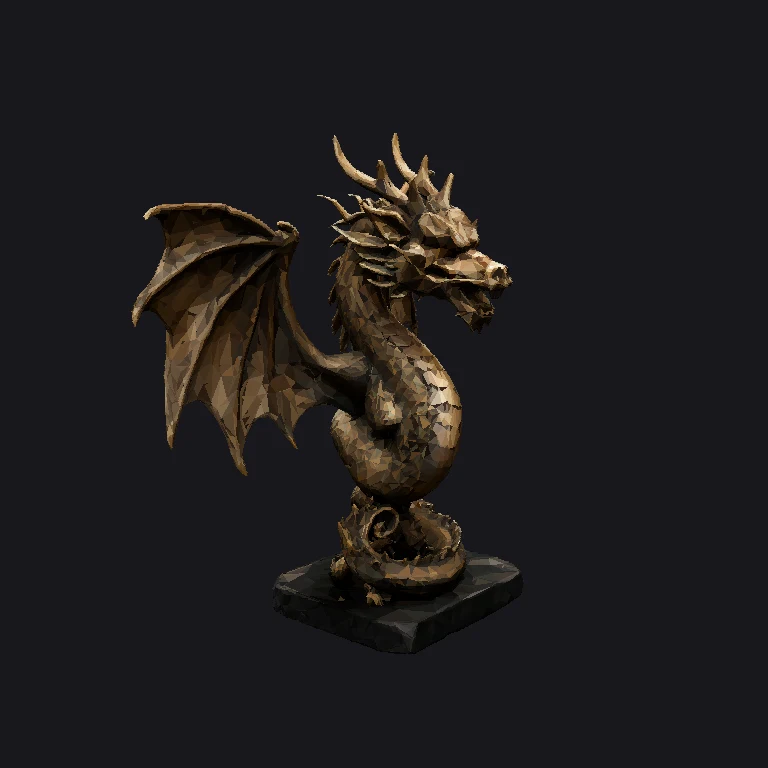
Textured meshAll workflows 42 samples
Restore the Photo
A torn, scratched, sepia-faded portrait comes back as a clean print — and an identity guard prints the repair ledger to prove nothing was invented.
Saved run $0.03943 · Live prices vary

How it runs
Restoration is the oldest paid chore in photo editing — human studios charge $20–85 a photo — and its AI failure mode is famous: the tool 'fixes' grandma into a stranger. This workflow is built around that fear. A vision survey inventories the damage before anything is touched; Seedream 5.5 repairs under a hard no-inventions rule; a Pruna upscale returns the print at 2896×2896; then an identity guard compares the result against the original face by face and object by object and prints a repair ledger — repaired, rebuilt, left alone — ending in a HELD or DRIFTED verdict. The demo portrait is a generated 1940s photograph with synthetic damage applied locally (three vertical scratches, one crossing the face; a torn bottom-left corner; a stain; a crease; sepia fade; dust), so the survey and ledger could be graded against known ground truth: the survey found every planted defect and the saved run's ledger keys to it item by item, verdict RESTORE: HELD. The honesty matters because the first probe run failed exactly the way users fear: the restorer invented a necklace the guard initially waved through. The prompts on both sides were hardened (no-additions clause for the restorer, adversarial neck/ears/wrists/background checks for the guard), and the shipped guide keeps the warning in plain sight: the guard is a check, not a guarantee — eyeball jewelry, hands and background yourself. A black-and-white original stays black-and-white; this workflow does not colorize.
More from this run
Damage survey
Overall sepia-toned colour cast Vertical scratch running from top to bottom on the far left side Vertical scratch running from top to bottom through the center, crossing the face Vertical scratch running from top to bottom on the right side Horizontal scratch line running from the right edge towards the center Large missing triangular area in the bottom-left corner Yellowish oval stain on the right side Numerous scattered white dust specks across the entire image FACE: damage: vertical scratch and dust specks FACES: 1
Identity guard + repair ledger
1) **IDENTITY:** The face is recognizably the same person. The features, expression, and bone structure are preserved accurately without recognizable drift. 2) **INVENTIONS:** None. The neck, ears, wrists, and background elements remain consistent with the original image, with no added jewelry, clothing details, or extraneous objects. 3) **REPAIR LEDGER:** **REPAIRED** * Vertical scratch running from top to bottom on the far left side * Vertical scratch running from top to bottom through the center, crossing the face * Vertical scratch running from top to bottom on the right side * Horizontal scratch line running from the right edge towards the center * Yellowish oval stain on the right side * Numerous scattered white dust specks across the entire image * Face damage (vertical scratch and dust specks) **REBUILT** * Large missing triangular area in the bottom-left corner (reconstructed via background and clothing pattern extension) **LEFT ALONE** * Overall sepia-toned colour cast (The restoration converted the image to grayscale, effectively removing the sepia tone, but as a deliberate stylistic choice rather than a failure to repair, this is considered a successful removal of the original color cast). RESTORE: HELD
Inputs and run details

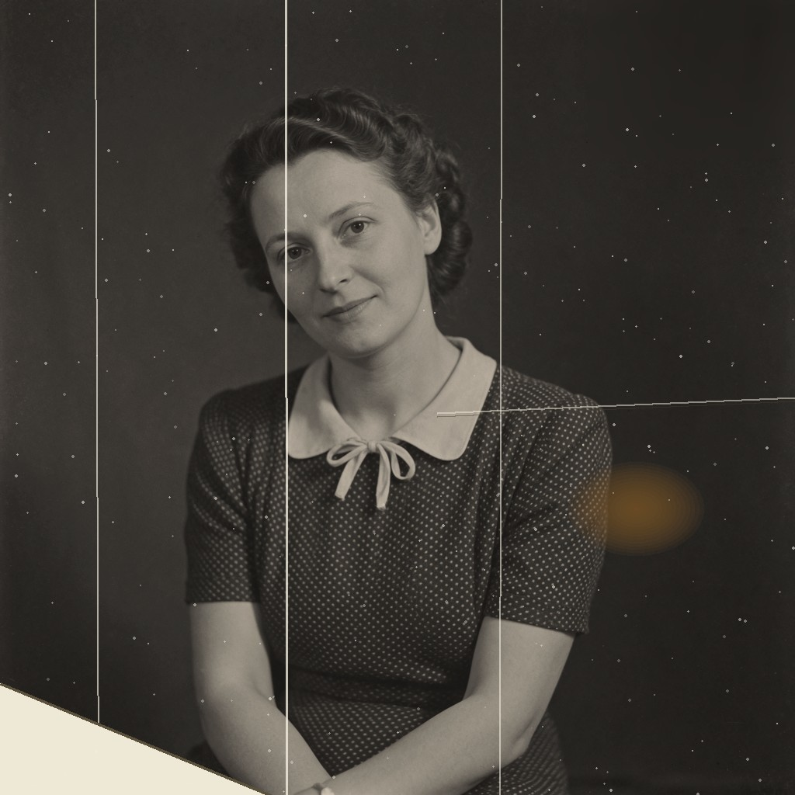
Models in this run
google/gemini-3.1-flash-litebytedance/seedream-v5.5/editpruna-ai/p-image/upscalez-ai/glm-4.6
Slice 3D · Fox walk cycle
Render an animated GLB as a walking pixel sprite. Download the included Fox or open the graph and supply your own character.
Saved run $0 · Local processing
How it runs
3D input supplies the rigged Fox. Slice 3D samples twelve poses from Walk into an animated slice sheet. Sprite stack render reads the sheet and plays the walk from one fixed camera angle.
Inputs and run details
All nodes run locally.
Photo to editable layers
One photo of a marble bust returns as four named layers — base plate, background, bust, pedestal — each a transparent PNG with a bounding box; stacked at their coordinates they rebuild the photo (mean abs diff 14.26/255)
Saved run $0.02735 · Live prices vary

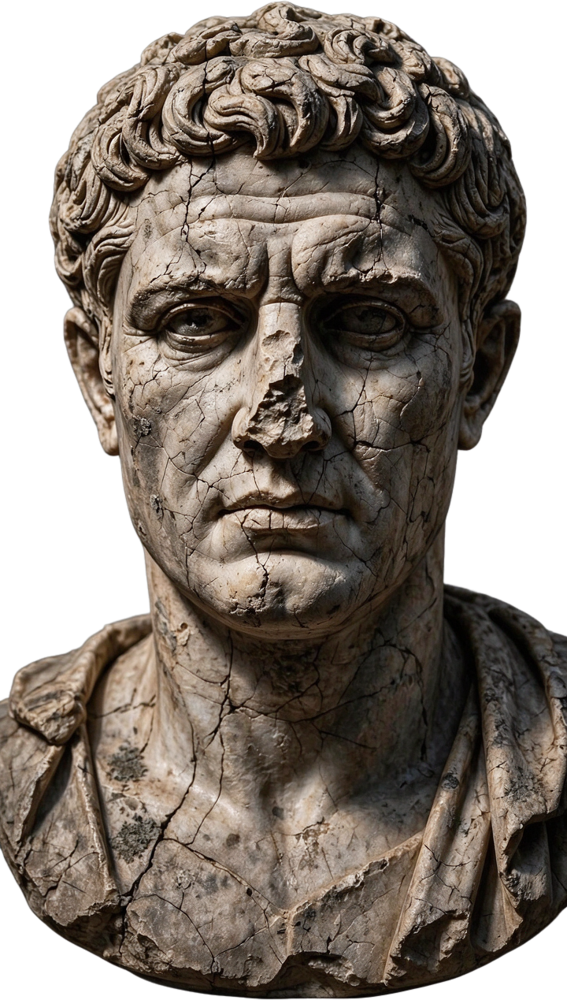
How it runs
Layer separation is the oldest ask in photo editing — give me the subject, the background and the props as pieces I can move — and the browser version has always been a mask you paint yourself. This workflow makes it one run: a Gemini survey names what should separate and what will resist, Seedream 5.0 Flash Layerize (bytedance/seedream/v5/flash/layerize, $0.027 flat at every size — the Seedream 5.5 decomposition route bills $0.60) returns a clean base plate plus each element as its own transparent PNG carrying a name, a z-index and a bounding box, and a GLM guide closes with what to do with the stack and the honest edges. The claim was checked by rebuilding: stacking this saved run's background, bust and pedestal at their boxes over the base plate lands at a mean absolute difference of 14.26/255 against the original photo, 82.3% of pixels within 25 — close, visibly the same photograph, not pixel-perfect. The bust cutout is genuinely clean (head, neck and drapery, pedestal excluded, edges tight); the background layer is a soft matte. Honest edges, all measured on this ship's own runs: the model RE-SEGMENTS every run — in the morning probe the bust was z3 and the pedestal z2, in this saved run they are z2 and z3 with reworded names, and recomposition across runs scored 6.65 to 27.30, so treat names and boundaries as per-run, not canonical. Some photos refuse outright with a 422 (the candle product shot from One Photo, Whole Campaign did; refusals are never charged), and identical requests flake — the route went 200/422/200 across this ship's attempts, with remote-URL inputs the flakiest and inlined images landing first try. The base plate behind a lifted element is regenerated inpaint, plausible rather than the original pixels, and fine hair and weathered edges separate worst. Why this shipped the day it did: the model's response always carried all four layers, but every nanoodle executor's edit node kept only the first returned image, so a graph received just the empty base plate — the fix (edit nodes surface every returned image plus the layer metadata) landed across JS, Py, Rust, the editor's embedded engine and nanoodle-mcp on 2026-11-20, and this example is its first proof. The saved run is assembled from two runs of this exact graph and says so in run.json: layers from the run whose layerize call landed, guide text from a second run whose layerize call refused — the guide does not read the layers, only the survey.
More from this run

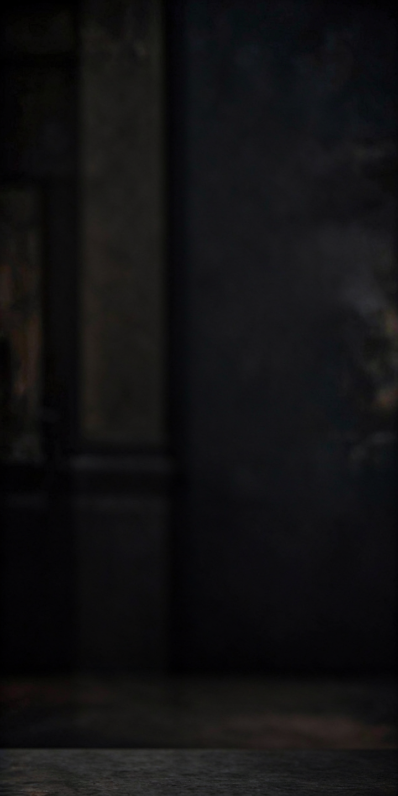

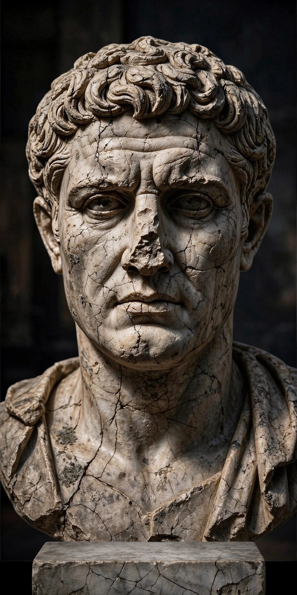

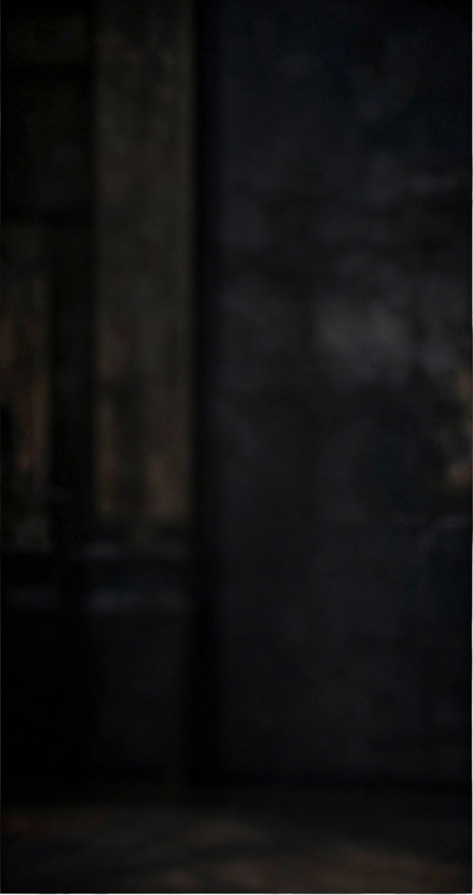

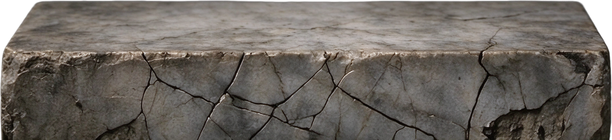
Layer survey
Background: Dark, indistinct shadowed void. Main Subject: Weathered, cracked stone bust. Supporting Elements: Integral stone plinth. The hair resists clean separation; its intricate, porous texture and deep crevices blend complexly into the dark background, making precise edge masking difficult.
Layers guide
**What You Got** You receive a layer stack. The stack contains a clean base plate with the stone bust and pedestal removed and the area inpainted. The background is a separate transparent PNG. The main subject, the weathered stone bust, is its own named layer. The supporting element, the stone pedestal base, is also its own named layer. Stacking these layers at their provided coordinates reconstructs the original image. **What to Do With Them** Use these layers for precise compositing. A direct application is to place the isolated stone bust onto a different backdrop, such as a library shelf or a digital gallery wall, changing the context without a new photoshoot. You could also separate the bust from its pedestal, moving the subject to a new base or removing it entirely for a floating effect. **The Honest Edges** The model works best with sharp, clear images. The fine hair curls will likely have soft, imperfect edges, as photographic cutouts struggle with such detail against a dark background. The inpainted area on the base plate is a plausible recreation, not the original pixels. Each run re-segments the photo, so layer boundaries and names may shift slightly, and a rebuild will be visually close but not pixel-perfect.
Inputs and run details

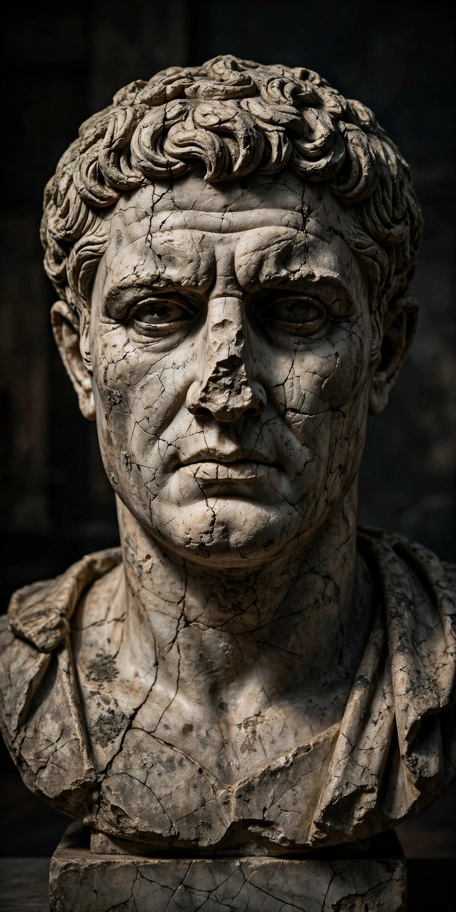
Models in this run
google/gemini-3.1-flash-litebytedance/seedream/v5/flash/layerizez-ai/glm-4.6
Talking photo
A weathered marble emperor, silent for two thousand years, performs one line — frame-checked against the audio: mouth nearly closed at the pause, wide open on the loudest word
Saved run at least $0.725 · Live prices vary
How it runs
Upload one front-facing photo with a story in its face — a statue, a painting, a portrait — write one short line, and the photo performs it. The script node carries a direction line plus the line itself; a Gemini TTS voice (Algenib) performs it, a trim node caps the clip at five seconds, and LTX-2.5 Fast takes the photo and the audio as direct inputs, generated audio off, and moves the mouth to the supplied voice. A GLM guide closes with what you made, how it works, and the honest edges. The demo subject is a cracked marble emperor bust, chipped nose and all, delivering: "Two thousand years silent... and you wake me NOW?" The sync claim was checked in the video, not the listing: a probe run came first, and on this saved run the mouth was frame-checked against the audio — wide open mid-line (1.5s) and closed on the script's ellipsis pause (~3.0s), where the waveform itself goes quiet. The voice pairing was checked the same way: the example first shipped with Sulafat, a female voice (measured 210 Hz) on a marble emperor — caught and called out the same day — and was re-voiced with Algenib, whose performance here measures 143 Hz; the clip above is that corrected run. Two pricing facts the catalog listing does not shout, both measured: audio-driven LTX runs render at 1080p even when 720p is selected, so they bill at the 1080p rate of $0.14 a second, not the $0.10 720p rate — a 5.00s clip bills exactly $0.70 — this saved run billed $0.70, plus about $0.025 of speech and a $0 guide. The honest edges, also printed in the guide: no current model reliably closes the mouth on pauses — in a frame-counted shootout LTX was best of field and still only closed on 2 of 6 pauses — so short lines with few pauses forgive most (this demo's pause did close; do not count on it). Keep scripts near ten words, because every second bills. Front-facing faces with an unobstructed mouth work best, and statues and paintings forgive more than photographs of real people. Have your own voice clip? Replace the speech node with an audio upload wired into the same port.
More from this run
Talking-photo guide
WHAT YOU MADE — This video is a still photograph of an ancient marble emperor, used as the photo's subject, performing one spoken line. The mouth movement is driven entirely by the voice clip, not generated speech. The line performed is: "Two thousand years silent... and you wake me NOW?" The emperor appears to speak these words directly, as if woken after two thousand years and not pleased about it. HOW IT WORKS — The script line was performed by a Gemini TTS voice, Algenib, delivering the old man's gravelly, clipped reading. The audio was trimmed to five seconds. LTX-2.5 Fast then took the photo and that audio as direct inputs, with generated audio turned off, so the clip carries only the original voice track. The clip's length follows the audio's length. Note that audio-driven runs render at 1080p even when 720p is selected. THE HONEST EDGES — Billing is per second: $0.14 a second at the audio-driven 1080p rate, so this five-second clip is about $0.70, plus a few cents for the speech. Keep lines to about ten words. No current model reliably closes the mouth on pauses; in a frame-counted shootout, LTX was best of the field and still closed the mouth on only 2 of 6 pauses. Short lines with few pauses forgive most. Front-facing faces with an unobstructed mouth work best, and statues and paintings forgive more than photographs of real people — which suits a marble emperor well.
Inputs and run details

Script — what the photo says
Direction: an ancient marble emperor, woken after two thousand years. An old man's voice — low, gravelly, stone-dry, impatient, brisk and clipped — no lingering. One short pause at the ellipsis, hard emphasis on NOW. Script: Two thousand years silent... and you wake me NOW?
Models in this run
gemini-3.1-flash-tts-previewlightricks/ltx-2.5/fastz-ai/glm-5.3-flash
talking-photo.NOTE.txt
Mesh diet
The 30,000-triangle dragon from Photo to Game-Ready Mesh, retopologized to a 4,000-face budget by Hyper3D Low Poly — the saved output parses at 3,929 triangles, silhouette intact
Saved run $0.40342 · Live prices vary
How it runs
AI mesh generators hand you a prop with a hundred thousand triangles and call it done; engines budget in thousands. This workflow closes that gap in the browser: Idol Max Turbo rebuilds one photo as a textured mesh of exactly 30,000 triangles, then Hyper3D Low Poly (landed on NanoGPT the day before this shipped) retopologizes it down to a face budget you set — 4,000 here, inside its 200–10,000 range — carrying the UVs and PBR textures over. A Gemini surveyor first writes down the silhouette features that must survive the cut, and the GLM guide closes with the budget table (Roblox caps a mesh at 20,000 triangles; mobile props run 300–3,000; WebGL props 1,000–10,000) and the honest edges. The proof is countable, and the counts are printed: the morning probe parsed at 30,000 in, 3,876 out; this saved run parses at 30,000 in, 3,929 out. Automatic retopology lands NEAR its target, not on it — quote the target as a target. Silhouette was checked by rendering both GLBs from three angles: wings, coiled tail, antlered head and plinth all read at ~4k triangles; the chin whiskers, teeth and wing-tip points merge, exactly what the survey flagged as fragile. Flaws and limits: automatic retopology is not hand retopology — a character that must deform at the joints still wants edge loops a person designs; props, environment pieces and LODs are the claim. The diet is in triangles, not megabytes: the diet GLB is 11.8 MB against the heavy mesh's 10.0 MB, because the transferred textures are as large as the source's — texture resolution is a separate lever. Already have a heavy GLB? Wire it straight into the Low Poly node's model input and skip the rebuild. One pricing note the run exposed: Idol Max Turbo's catalog price is variant-based, and the PBR variant this graph uses bills $0.20, not the $0.10 base. The turntable and the before/after still are plain flat-shaded renders of the saved GLBs with their own base-colour textures, not beauty shots.
More from this run

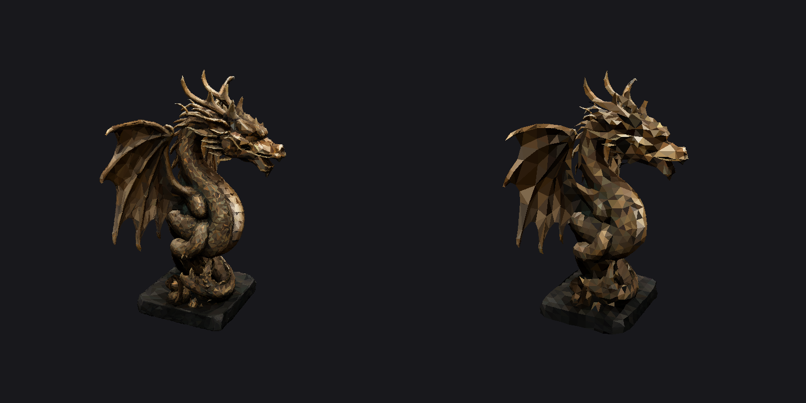
Object survey
Object: Bronze winged dragon figurine on a flat square plinth. Silhouette: Wide, scalloped bat-like wings spread bilaterally; upright S-curving serpentine neck and torso; helical coiled tail forming a circular base; antlered head profile angled forward. Fragile details: Slender curling chin whiskers; thin cranial horns and mane spikes; pointed wing membrane tips and claws; sharp dorsal spinal ridge scales; open jaw with individual small teeth.
Mesh-diet guide
WHAT YOU GOT Your bronze winged dragon figurine, rebuilt as a low-poly mesh ready for a game engine. The full silhouette survived the diet: the wide scalloped bat wings still spread bilaterally with their scalloped trailing edges, the S-curving serpentine neck and torso still reads as an upright S, the helical coiled tail still forms its circular base, and the antlered head profile still angles forward. The flat square plinth is intact. The bronze PBR textures and UVs carried over from the original mesh, so the material look is unchanged. The retopology target you set was 4,000 faces; the tested output measured 3,876 triangles. Automatic retopology lands NEAR its target, not exactly on it — quote the target as a target, and check the final count in your engine. PICK YOUR BUDGET The face-count field is the lever. Roblox caps a single mesh at 20,000 triangles, so this mesh fits comfortably with room to spare. Mobile props typically run 300–3,000 triangles, so dropping the target lower — say 1,500–2,500 — would suit a mobile scene, at the cost of softer wing scallops and tail coils. WebGL/three.js props run 1,000–10,000, so the current setting sits mid-range there. Keep a target near 4,000 if this dragon is a hero prop on a plinth; lower it if you need a crowd of them or a background piece. THE HONEST EDGES Automatic retopology is not hand retopology: a character that must deform at the joints still wants edge loops a person designs. Props, environment pieces and LODs — like this figurine — are exactly what this is for. The diet is in triangles, not megabytes: the output file can be as large as the input, because texture resolution is a separate lever. And the survey's fragile details will soften first — the curling chin whiskers, thin cranial horns and mane spikes, pointed wing tips and claws, the sharp dorsal scale ridge, and the individual teeth in the open jaw are the places to inspect closely before shipping.
Inputs and run details

Photo to game-ready mesh
Turn one photo into a textured 3D mesh. The saved dragon has 29,992 triangles, UVs, and embedded 2,048 px textures. Inspect it in nanoodle or import the GLB into Blender.
Saved run $0.10295 · Live prices vary
How it runs
Upload a photo of one object. Gemini describes the visible details and lists what the photo hides. Idol Max Turbo builds the mesh directly from the photo, and GLM writes a guide from Gemini’s survey.
What to look for
Idol infers the backs of the wings, rear spine, and underside of the base. The colour and normal maps carry much of the fine detail, and thin features like whiskers are approximate. The mesh is unrigged and has no measured scale.
Compare with Photo to 3D splatMore from this run
Object survey
Object: Cast metal dragon figurine with outstretched wings coiled on a square plinth View: Front eye-level perspective slightly turned to the left Materials and colours: Antiqued gold-bronze metal with dark patina in recesses, set on a dark grey stone base Hidden sides: Dorsal side of the neck and spine, rear surface of both wings, and underside of the base Fragile details: Slender whiskers, thin pointed horns, sharp dorsal spines, and thin wing membranes with protruding tips
Mesh guide
What you have is a real polygon mesh of the dragon figurine: 30,000 triangles with UVs, delivered as one GLB with the textures embedded. The textures are 2048px base-colour and normal maps plus metallic-roughness maps, so the antiqued gold-bronze metal and dark patina read correctly under PBR lighting. These are surfaces you can light, edit and print — the thing a Gaussian splat is not. The GLB imports directly into Blender, Unity, Unreal and Godot, and slicers such as PrusaSlicer, Bambu Studio and Cura accept GLB for 3D printing. The model arrives unrigged: character rigging is available as an option, but this workflow leaves it off. The honest edges: Idol invents every side the photo did not show, following the survey's hidden-sides line — the dorsal neck and spine, the rear wing surfaces and the underside of the base. Fine detail lives in the texture maps, not the geometry; 30,000 triangles is a budget, so the slender whiskers, thin horns, dorsal spines and wing membranes are approximate. Thin, shiny or transparent parts are approximate too. The mesh holds one object only, and its scale is relative, not measured.
Inputs and run details
Models in this run
google/gemini-3.8-flashsperidlabs/idol/max/turboz-ai/glm-5.3-flash
photo-to-game-ready-mesh.NOTE.txt
One photo, whole campaign
Turn a candle photo into a sale poster in three edits. Change the backdrop, add the props, then write in the offer.
Saved run $0.09052 · Live prices vary

How it runs
Give Seedream 5.5 a product photo and three instructions. Each edit starts with the previous image. Gemini transcribes the original label and reads the finished poster independently, then GLM compares the two descriptions.
What to look for
The candle label held across all three edits. The headline picked up an extra opening quote mark. The report also flagged wording differences between the two Gemini reads, so check the poster itself for visual changes.
More from this run

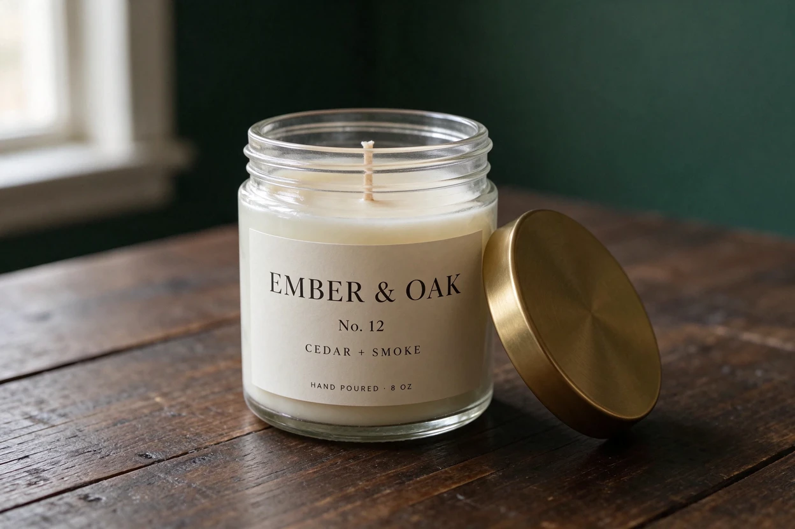

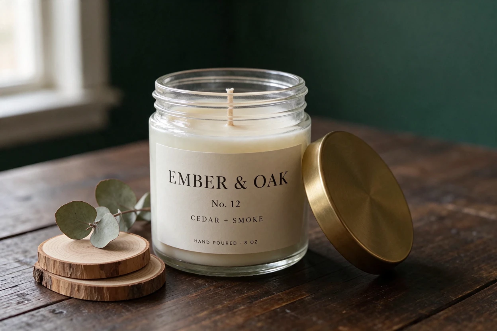
Product anchors
Product: Scented candle in a clear glass jar with an open metal lid Label text: EMBER & OAK No. 12 CEDAR + SMOKE HAND POURED · 8 OZ Colours: Transparent, off-white, cream, brushed gold, black Materials and finish: Smooth clear glass, matte wax, matte paper label, brushed brass metal Setting now: Plain seamless off-white surface and studio background
Blind re-read
Product: Scented candle in a clear glass jar with a brass lid Label text: EMBER & OAK No. 12 CEDAR + SMOKE HAND POURED · 8 OZ Colours: Off-white wax, clear glass, cream label, brushed gold lid Setting: Dark wooden surface with two small wood slices, dried eucalyptus leaves, and a soft-focus dark green wall and window in the background Added text: “12.12 SALE UP TO 30% OFF
Drift report
HELD: Scented candle in a clear glass jar; label text EMBER & OAK, No. 12, CEDAR + SMOKE, HAND POURED · 8 OZ; off-white/ivory wax, clear glass, cream label, brushed gold lid DRIFTED: Lid material changed without request — original read "open metal lid / brushed brass metal" vs re-read "brass lid" with no mention of it being open; wall now described as "soft-focus" though no blur was requested CAMPAIGN: COMPLETE
Inputs and run details

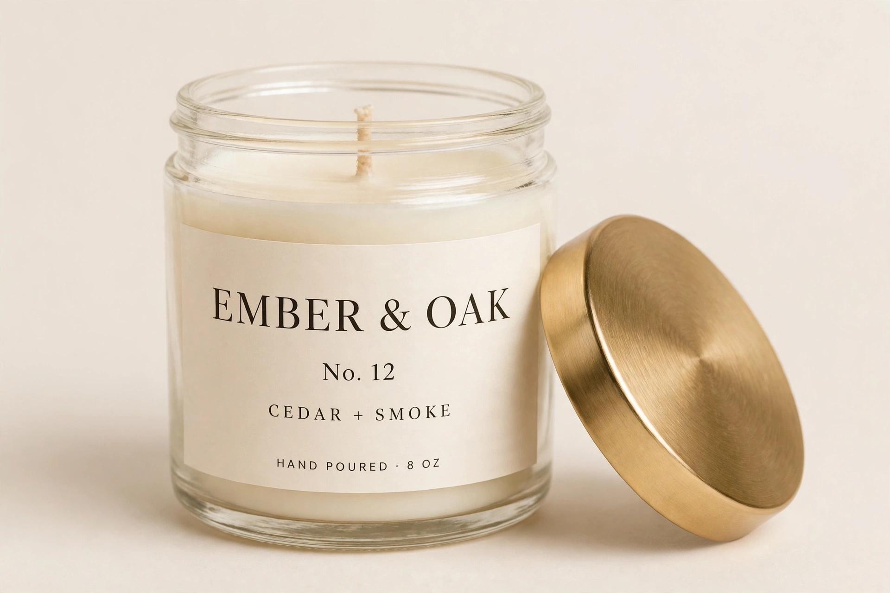
Edit 1 · backdrop
Change only the setting: place the candle on a dark rustic wooden table against a deep green wall, soft window light from the left. Keep the candle, its glass jar, the gold lid, the ivory wax and the cream label exactly the same — every word on the label unchanged: EMBER & OAK, No. 12, CEDAR + SMOKE, HAND POURED · 8 OZ.
Edit 2 · props
Add a small stack of two cedar wood discs and a short sprig of dried eucalyptus on the table beside the candle. Change nothing else — the backdrop stays as it is, and keep the candle, its glass jar, the gold lid, the ivory wax and the cream label exactly the same — every word on the label unchanged: EMBER & OAK, No. 12, CEDAR + SMOKE, HAND POURED · 8 OZ.
Edit 3 · offer text
Add elegant cream-coloured poster text in the empty wall space above the candle: '12.12 SALE' in large serif letters, and beneath it 'UP TO 30% OFF' in smaller letters. Change nothing else — the props stay where they are, and keep the candle, its glass jar, the gold lid, the ivory wax and the cream label exactly the same — every word on the label unchanged: EMBER & OAK, No. 12, CEDAR + SMOKE, HAND POURED · 8 OZ.
Models in this run
google/gemini-3.8-flashbytedance/seedream-v5.5/editz-ai/glm-5.3-flash
one-photo-whole-campaign.NOTE.txt
Edit with references
Bring an outfit, an accessory, and a companion into one portrait. Here, three reference photos add a red jacket, sunglasses, and a Dalmatian puppy.
Saved run $0.07053 · Live prices vary

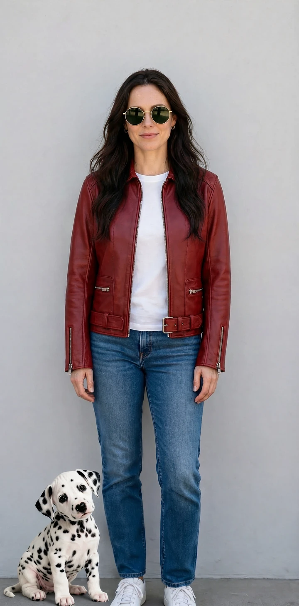
How it runs
Upload the main photo and up to three references in this workflow. Name each picture by number in one instruction. MiniMax H3-Image combines them, and a Gemini and GLM review compares the before and after descriptions.
What to look for
The jacket, glasses, and puppy appear while the subject’s hair, pose, and background hold. The puppy looks just off camera. The report marks the open jacket and gold frames as unclear because the second Gemini read lacked those details.
More from this run
Subject anchors
Face: Oval face, fair skin with light freckles, dark brown eyes, small hoop earrings. Hair: Dark brown, chest-length, parted in the middle with loose waves. Outfit now: Plain white crewneck short-sleeve t-shirt, blue straight-leg denim jeans, white sneakers. Pose: Standing upright facing forward, arms hanging straight down at the sides, legs straight. Background: Solid flat light grey wall behind, smooth grey concrete ground underfoot.
Blind re-read
Person: A woman with long, wavy dark brown hair parted in the middle, looking forward with a slight smile. Wearing: A red leather jacket, a plain white crewneck t-shirt, blue straight-leg jeans, and white sneakers. Accessories: Round dark sunglasses with thin metallic frames and small metallic hoop earrings. Animals: A Dalmatian puppy with white fur and black spots, sitting on the ground to the woman's lower-left side. Background: A plain, flat light gray wall and a smooth gray floor.
Edit report
LANDED: red leather jacket, white t-shirt, jeans and sneakers unchanged, Dalmatian puppy sitting on the floor beside the legs, plain grey wall and floor preserved, hoops earrings preserved, long dark hair and pose preserved MISSING: jacket worn open (unclear in the re-read), round gold-framed sunglasses (re-read says only thin metallic frames, color unclear), puppy looking at the camera (unclear in the re-read) SUBJECT: SURVIVED — face, hair, outfit, pose, and background all match the anchors with no drift.
Inputs and run details

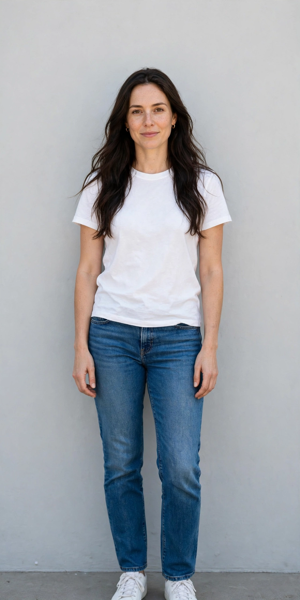

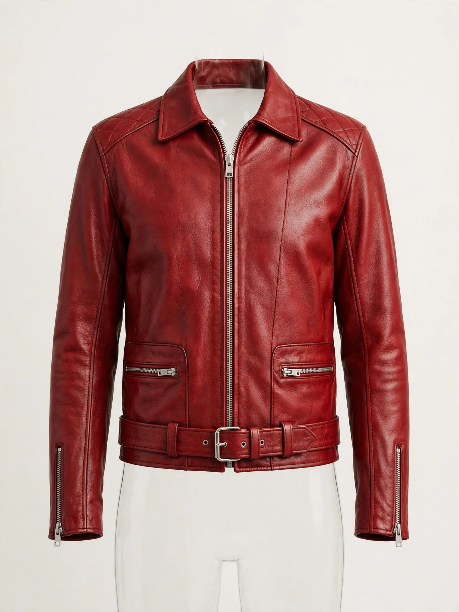

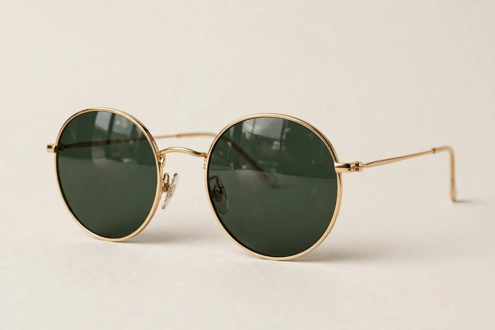

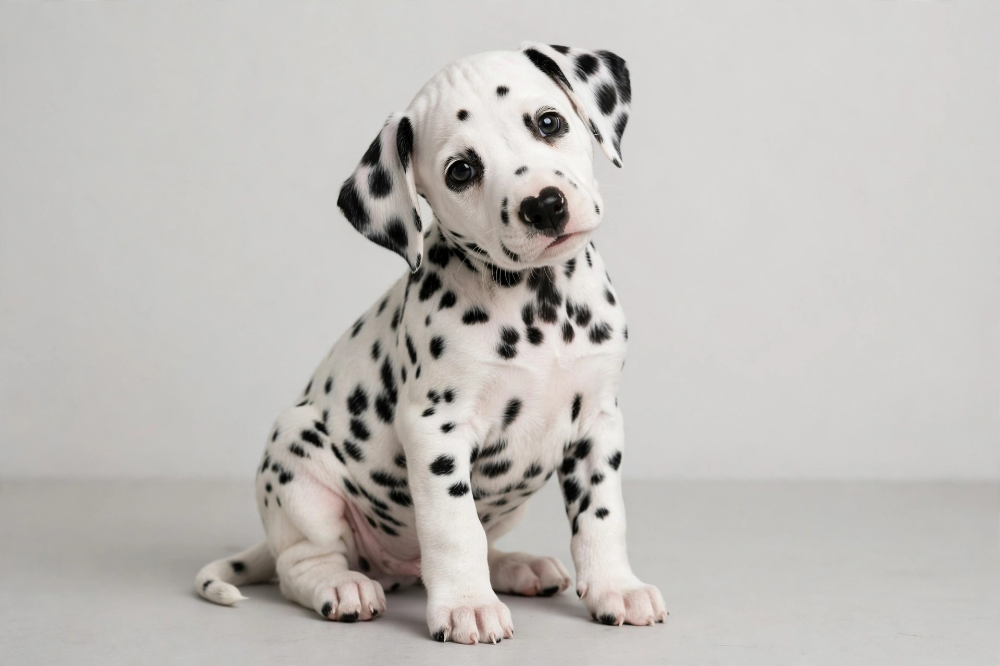
Edit instruction (names each picture)
Picture 1 is the main photo. Keep the person in Picture 1 exactly as they are — same face, same long dark hair, same pose, same jeans and shoes, same plain grey wall behind them. Dress the person in the red leather jacket from Picture 2, worn open over the white t-shirt. Put the round gold-framed sunglasses from Picture 3 on the person's face. Sit the Dalmatian puppy from Picture 4 on the floor beside the person's legs, looking at the camera. One single photorealistic scene with soft, even light.
Models in this run
google/gemini-3.8-flashminimax-h3-imagez-ai/glm-5.3-flash
edit-with-references.NOTE.txt
Photo to 3D splat
Turn one object photo into a 3D preview you can orbit. This golden dragon is made of 245,428 coloured points.
Saved run $0.10344 · Live prices vary
How it runs
Upload a photo. Gemini surveys the visible side, Idol makes a Gaussian splat, and GLM describes what was reconstructed. Open the workflow to orbit the GLB point preview in the editor.
What to look for
The scales, horns, and plinth show up as points. Idol infers the rear wings and base underside. This preview has no polygon surfaces or UV maps. The full PLY splat is available from the model API.
Compare with Photo to game-ready meshMore from this run
Object survey
Object: Winged dragon figurine mounted on a rectangular plinth. View: Eye-level frontal view with head turned slightly left. Materials and colours: Antiqued bronze with dark patina, on a dark grey stone base. Hidden sides: Posterior side of the wings, rear spine, back of the body, and plinth underside. Fragile details: Thin wing membranes, delicate facial whiskers, sharp horns, and spiky spinal crests.
Splat guide
WHAT YOU GOT This is a Gaussian splat of a winged dragon figurine on its rectangular plinth: hundreds of thousands of soft coloured points that together read as a solid, orbitable object — antiqued bronze with dark patina over a dark grey stone base. It is delivered as a GLB point-cloud preview. To be plain: this is a point splat, not a polygon mesh. There are no surfaces, no UVs and no textures to edit. Idol also returns a full PLY splat on the raw API, but that is API-only; what you have in hand here is the GLB preview. HOW TO OPEN IT The GLB preview opens in any GLB viewer, or in Blender if you prefer working there. If you fetch the PLY from the API instead, open it in a splat viewer such as SuperSplat, PlayCanvas or most Gaussian-splat tools. THE HONEST EDGES Idol invented every side the photo did not show: the posterior side of the wings, the rear spine, the back of the body and the plinth underside are guesses, not observations. Thin wing membranes, delicate facial whiskers, sharp horns and spiky spinal crests are approximate at best. The splat holds one object only, and its scale is relative, not measured.
Inputs and run details

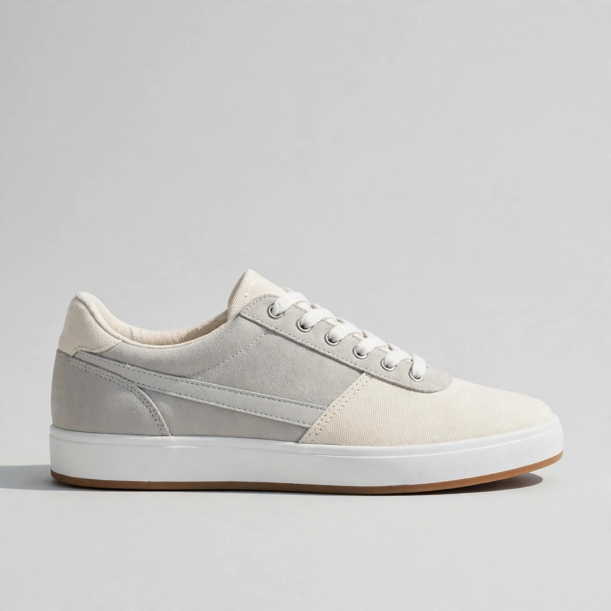
Models in this run
google/gemini-3.8-flashsperidlabs/idolz-ai/glm-5.3-flash
The editor workflow also points the 3D node at the saved GLB as its sample, so you can orbit the result before running; ▶ Run replaces it. Everything else matches the sampled graph.
Subject anywhere
Move a product into a new scene and check what happened to its label. This coffee bag goes from a kitchen counter to an alpine café terrace.
Saved run $0.0906 · Live prices vary

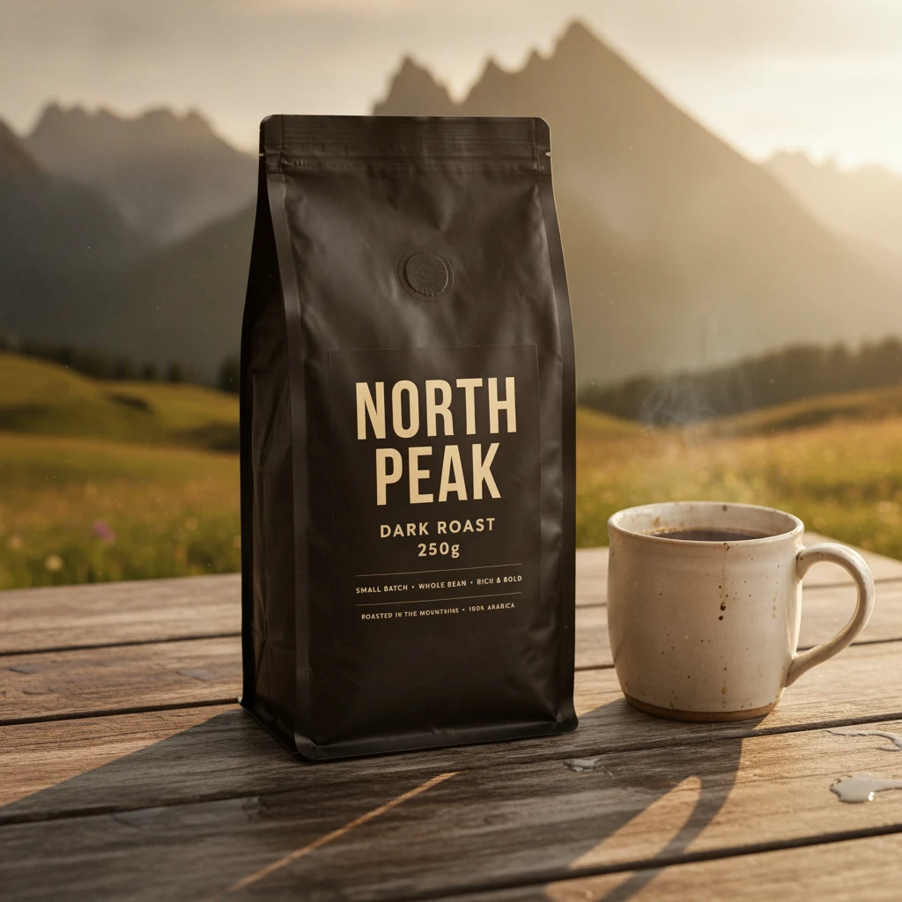
How it runs
Upload one product photo and describe the destination. Gemini transcribes the label, BRIA removes the background, and Nano Banana Edit creates the new scene around the cutout. Gemini and GLM then check the lettering.
What to look for
The main label remains readable, but the bottom line is soft at full size. The placement step can change pixels, and the report compares two transcriptions, so inspect the lettering before publishing.
More from this run

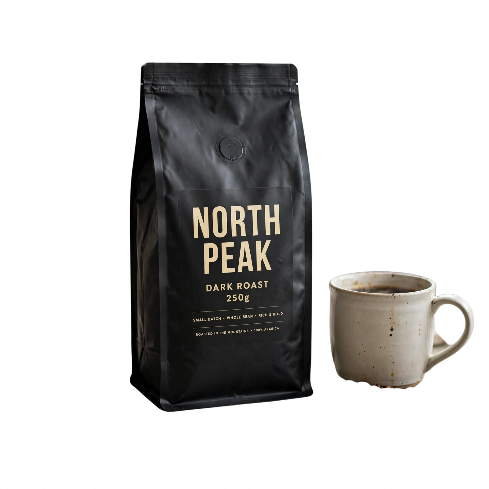
Preservation spec
SUBJECT: Matte black North Peak coffee bag LABEL TEXT: NORTH PEAK DARK ROAST 250g SMALL BATCH • WHOLE BEAN • RICH & BOLD ROASTED IN THE MOUNTAINS • 100% ARABICA COLOURS: matte black, warm cream SHAPE: Tall upright rectangular standing pouch with side gussets, flat base, and sealed top edge
Blind re-read
LABEL TEXT SEEN: NORTH PEAK DARK ROAST 250g SMALL BATCH • WHOLE BEAN • RICH & BOLD ROASTED IN THE MOUNTAINS • 100% ARABICA SUBJECT SEEN: Coffee bag COLOURS SEEN: Black, cream CONDITION: Lower label text is warped and misspelled with garbled lettering in "MOUNTAINS" and "ARABICA"
Preservation verdict
LABEL: PRESERVED SUBJECT: CHANGED — condition reports warped, garbled lettering in "MOUNTAINS" and "ARABICA," contradicting the intact spec text VERDICT: NEEDS WORK — label distortion/regeneration on the lower text lines must be fixed before the placement is acceptable.
Inputs and run details

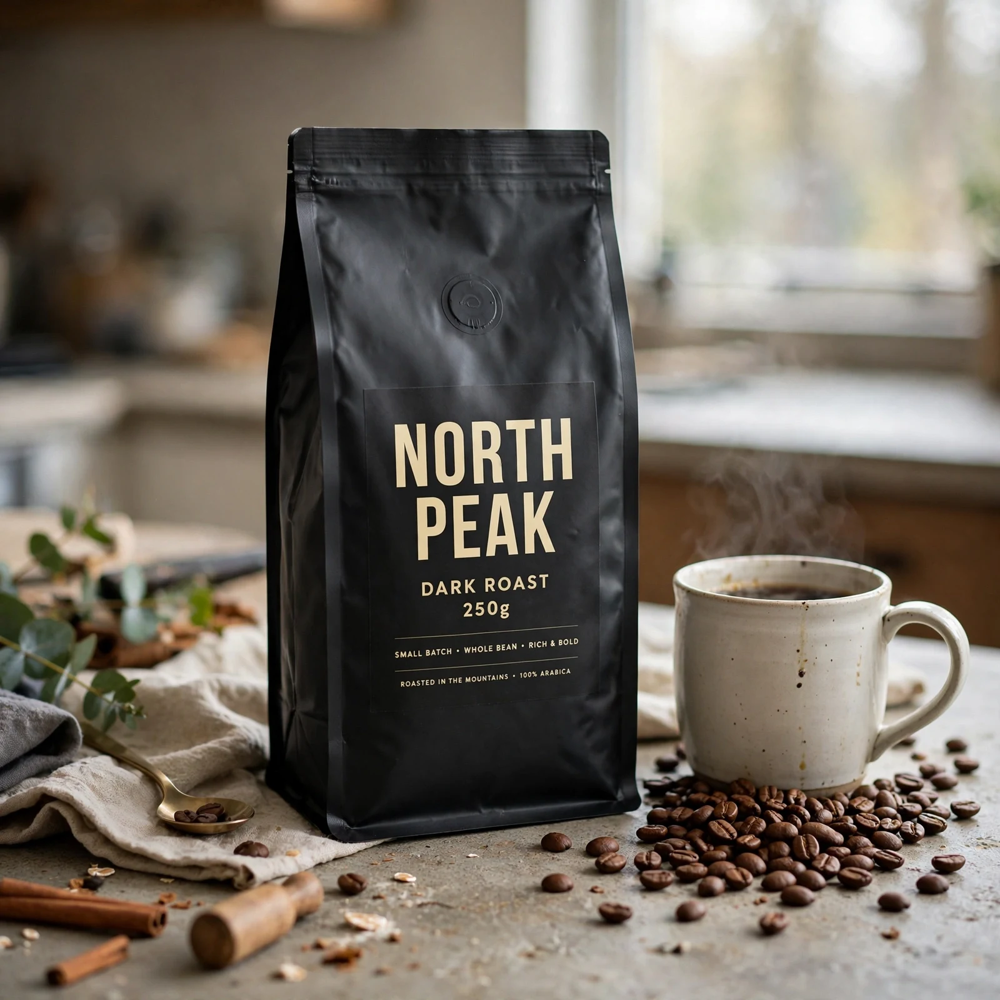
New scene
A sunlit alpine cafe terrace at golden hour: the product standing on a weathered wooden table, a small cup beside it, high mountain meadows and peaks behind, warm evening light.
Placement brief
Place the cut-out subject from the input image into the scene described after the line break. The input subject arrives on a transparent background: build the scene around it and set it down naturally, with light, shadow and perspective that match the scene. Do not redraw, restyle, resize or alter the subject itself in any way - its shape, colours and every printed word on it must stay exactly as they are. Photorealistic advertising photograph. SCENE:
Models in this run
google/gemini-3.8-flashbria/rmbg-3nano-banana-editz-ai/glm-5.3-flash
Storyboard relay
Fix a continuity error between two storyboard frames. A postal robot picks up an extra seedling in the draft, and one edit removes it.
Saved run $0.06528 · Live prices vary

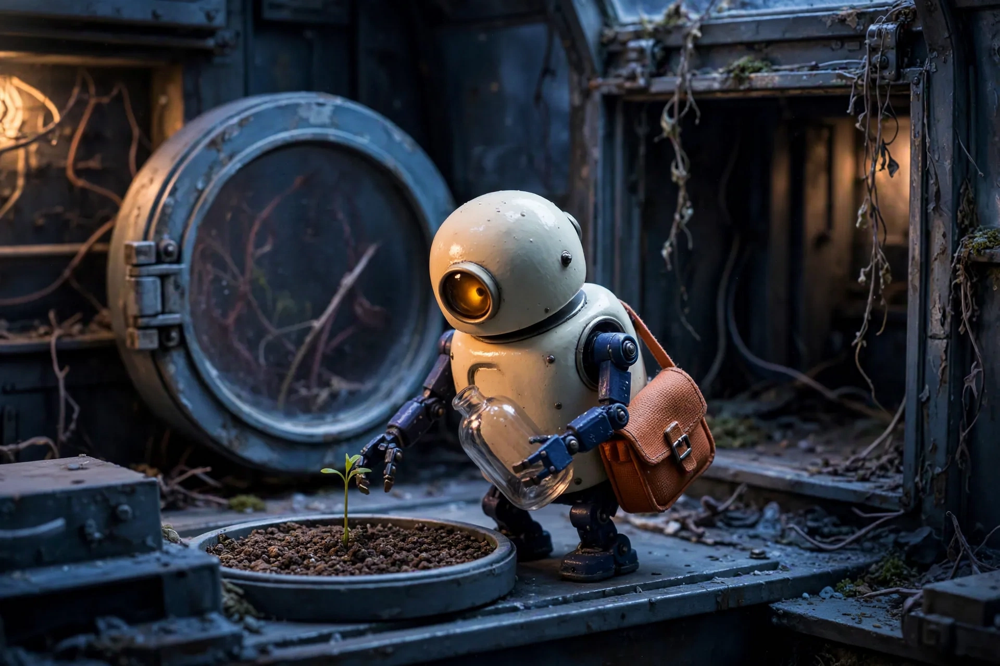
How it runs
Write what happens in the first shot and what needs to carry into the next. Muse makes the first frame. Nano Banana drafts the next frame, then Muse Edit revises it using both frames and Gemini’s critique.
What to look for
The revision removes the duplicate plant and improves the robot’s pose. A fresh Gemini review still flags the closed hatch. Compare all three frames below.
More from this run

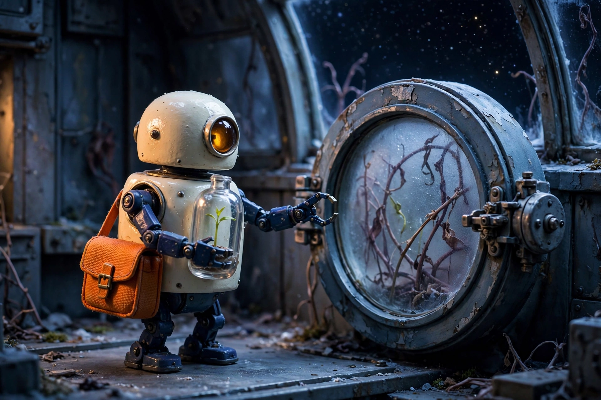

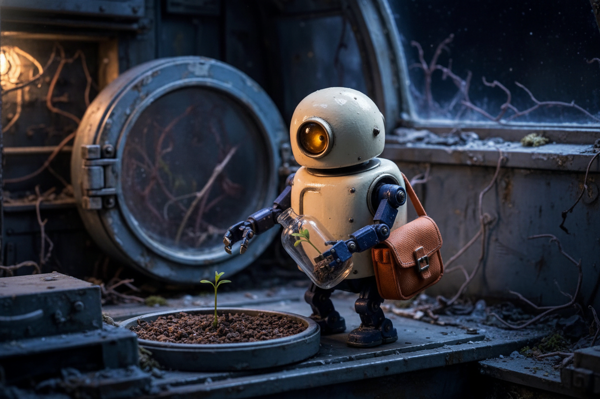
What Gemini asked the repair model to change
**Visible Story Action:** - **Frame 1:** Outside the greenhouse, the robot stands holding a sealed seedling capsule while reaching for the locked circular hatch. - **Frame 2:** The robot stands over a circular soil tray containing a planted seedling, reaching toward it with an empty gripper while holding a capsule containing a second seedling. **Mismatches:** 1. **Prop Duplication (Seedling):** Frame 1 has one seedling inside the capsule. Frame 2 shows two seedlings simultaneously—one planted in the tray and an identical duplicate still inside the glass capsule. 2. **Capsule State:** Frame 1 shows a sealed capsule. Frame 2 requires an opened, empty capsule, but it remains sealed with soil and a plant inside. 3. **Location / Hatch State:** Frame 1 shows the circular hatch closed from the exterior. Frame 2 keeps the robot in the same hallway with the circular hatch still closed, rather than inside the greenhouse with the hatch standing open behind it. 4. **Robot Pose:** The robot is upright and standing in Frame 2, rather than crouched beside the soil tray. **Smallest Specific Correction:** Remove the duplicate seedling and dirt from inside the glass capsule so it is visibly open and empty, swing open the circular hatch behind the robot to show it has entered the greenhouse, and adjust the robot into a lower crouching posture over the soil tray.
Fresh review of the repaired frame
### Story Beat Frame 1 establishes the postal robot arriving outside the locked greenhouse, seedling safely encapsulated. Frame 2 clearly conveys the next beat: the robot leans forward over a soil tray inside the compartment, having successfully transferred the seedling to the soil while clutching the empty glass jar. ### Continuity Analysis | Feature | Frame 1 | Frame 2 | Status | | :--- | :--- | :--- | :--- | | **Robot Design & Palette** | Cream enamel dome, single amber eye, blue articulated limbs, orange satchel. | Identical proportions, materials, satchel buckle, and blue/cream coloring preserved. | Consistent | | **Glass Capsule & Seedling** | Single seedling enclosed inside sealed glass jar held in right gripper. | Seedling is planted in soil tray; glass jar is held empty in right gripper. Exactly one plant/capsule visible. | Consistent (Intended state change) | | **Greenhouse Hatch** | Closed round hatch with frost/vines, locked latch on right, hinge on left. | Round hatch structure visible in background, though seemingly still closed/glazed rather than swung open. | Changed (Spatial drift) | | **Environment & Lighting** | Tactile stop-motion aesthetic, cool indigo fill with warm amber accent lighting. | Perfectly matched textures, grit, and directional practical lighting. | Consistent | ### Director's Note The character design, tactile miniature finish, and prop tracking (plant removed from jar) translated seamlessly. For absolute narrative clarity, the round hatch directly behind the robot should be visibly open/swung back into the room rather than appearing closed with its original frosted pane.
Inputs and run details
First scene
First frame of an original two-scene story. A tiny postal robot has a rounded cream enamel body, one round amber eye, short dark-blue legs, and an orange mail satchel. It carries one clear glass capsule containing a single bright-green seedling. Outside a locked circular hatch of an abandoned orbital greenhouse, the robot reaches toward the small mechanical latch beside the door with one gripper while holding the capsule securely with the other. Dormant vines are visible through frosted glass; a curved station window reveals a black starfield. Wide 3:2 medium shot with the full robot, capsule and hatch visible. Tactile stop-motion miniature photography, indigo shadows and warm amber practical light. One robot and one capsule. No lettering, captions, split screen, panel borders or watermark.
Next beat
Create the next story beat inside the greenhouse. The robot is now crouched beside a circular soil tray, carefully placing the same bright-green seedling into the soil with one gripper; its other gripper holds the opened, now-empty glass capsule. The orange satchel remains visible. The round hatch stands open behind it. Frame the planting action clearly in a new medium shot. This is a visibly different action and location within the same world, not a restyle or wider crop of the doorway scene. Retain the tactile miniature look and indigo/amber light. No lettering or extra characters.
Continuity rules
Keep the same robot's rounded cream body, single round amber eye, dark-blue legs, orange satchel and relative proportions. Track the one glass capsule and one green seedling: the closed capsule in frame 1 should be opened and empty during planting in frame 2, with no duplicate seedling or capsule. Keep the miniature materials and indigo/amber lighting recognizable. Frame 1 shows an arrival at a closed hatch; frame 2 must clearly show planting inside after the hatch opens.
Models in this run
meta/muse-image/text-to-imagenano-banana-editgoogle/gemini-3.8-flashmeta/muse-image/edit
Another run: A crab catches the wind
· Saved run $0.06551
This run follows a red crab and a yellow kite across a pink salt lagoon. The repair restores the spool and the pink sky. The kite still has the wrong number and placement of bows, which the fresh Gemini review picks up.
One repair, with remaining flaws

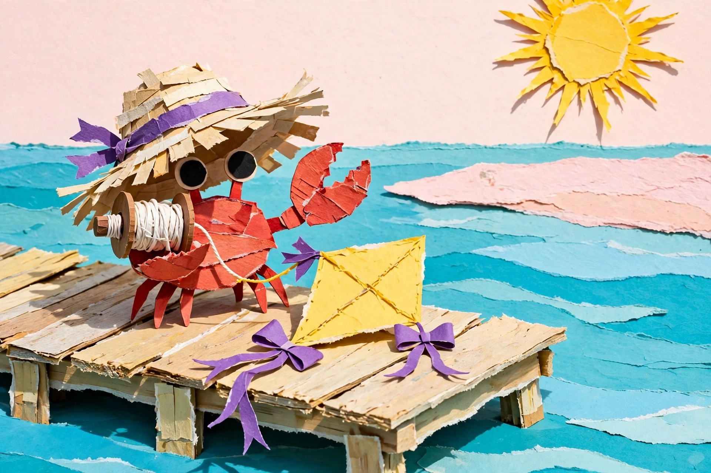

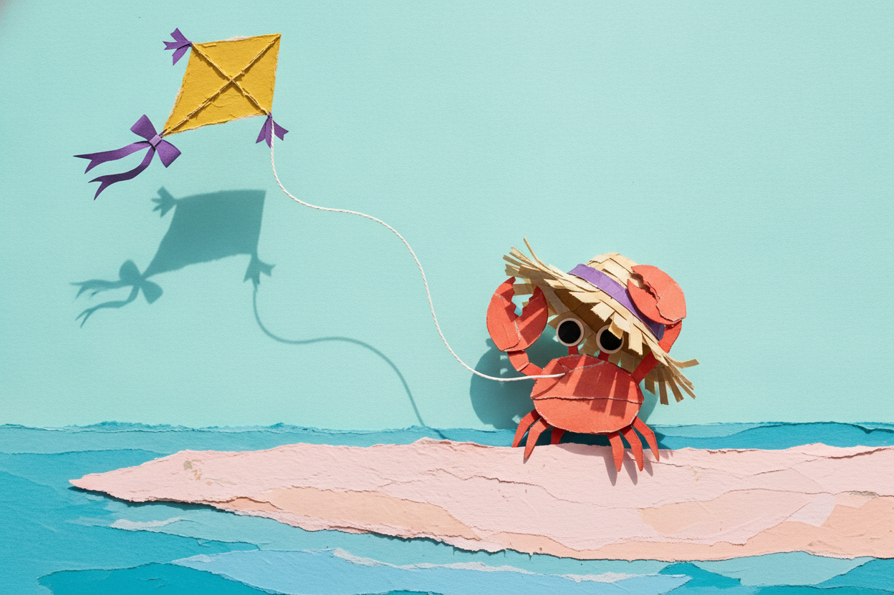

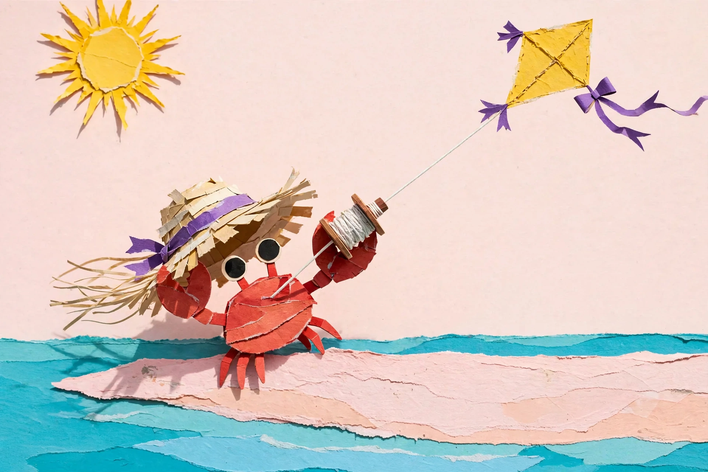
What Gemini asked the repair model to change
**Visible Story Action** - **Frame 1:** On a sunlit wooden jetty, a red crab in a straw hat holds a white string reel with one claw, standing beside a resting yellow kite with loose violet bows, gazing toward a distant pink sandbar. - **Frame 2:** Relocated to the pink sandbar, the crab flies the yellow kite in the sky, holding its hat with its left claw while the kite string leads down toward its body/right side. **Continuity Mismatches** 1. **String Reel Missing / Improper Attachment:** Frame 1 features a prominent spool reel held in the claw. In Frame 2, the reel has vanished entirely; the kite string disappears behind the crab’s body rather than connecting to a held reel. 2. **Kite Bow Count / Placement:** In Frame 1, two large violet bows lie detached (with one small purple attachment at the kite's top edge). In Frame 2, the kite has three purple bows (two at opposite side points, one on the tail ribbon) instead of exactly two tail bows. 3. **Environment/Sky Color:** Frame 1 has a pale pink sky with a yellow torn-paper sun. Frame 2 completely changes the sky to solid cyan/turquoise with no sun visible. **Smallest Specific Correction** Place the wooden string reel into the crab's raised right claw so the flying line visibly spools from it, and adjust the kite to have exactly two violet bows on its tail.
Fresh review of the repaired frame
### Story Beat Frame 1 establishes the crab on the wooden pier holding the spool, looking toward the distant sandbar with the kite resting nearby. In Frame 2, the action successfully advances: the crab relocates to the pink sandbar, holds down its straw hat against the wind with one claw, and flies the yellow diamond kite with the other via a taut white string. The new wind-blown action reads clearly. ### Continuity Table | Feature | Frame 1 | Frame 2 | Status | | :--- | :--- | :--- | :--- | | **Location / Surface** | Sun-bleached wooden jetty | Flat pink torn-paper sandbar | Consistent (intended beat change) | | **Crab Anatomy & Hat** | Red torn-paper body, 2 claws, straw hat with purple band | Same red body, claws, straw hat with purple band | Consistent | | **Kite Design & State** | Resting yellow diamond kite, purple tail accents | Flying yellow diamond kite aloft, taut string | Consistent (intended state change) | | **Spool / Hand-off** | Spool held in right claw | Spool switched to raised left claw | Changed | | **Bow Count / Tail** | 2 large violet bows unattached/nearby, small purple tip | 1 purple ribbon bow on kite tail, extra corner tassels | Changed | | **Art Style & Media** | Torn paper collage, bright pastel tones | Torn paper collage, matching paper textures/colors | Consistent | ### Director's Note The cut-paper texture, character identity, and dynamic wind motion carry over exceptionally well. For future iterations, ensure the kite tail preserves the exact count and design of the two purple ribbon bows rather than shifting to corner tassels.
Inputs for this version
First scene
First frame of an original two-scene story. A small red crab kite-maker stands on a sun-bleached wooden jetty over a shallow turquoise salt lagoon. It has two large claws, four small walking legs visible, round black eyes, and a floppy straw hat with a violet ribbon. One claw holds a wound white string reel; beside it rests a single yellow diamond kite with exactly two violet tail bows. The crab looks toward a flat pink sandbar across the water. Bold cut-paper collage, crisp torn-paper edges, coral-red, yellow, turquoise and pale pink, bright overhead sun. Wide 3:2 composition; entire crab, reel, kite and jetty visible. No robots, space stations, glass capsules, plants, text, panel borders or watermark.
Next beat
Create the next story beat on the pink sandbar across the lagoon. The same crab braces its legs and leans backward as the yellow diamond kite lifts overhead in a strong breeze. The white string visibly connects the kite to the reel in one claw; the other claw keeps the straw hat from blowing away. Exactly two violet bows remain on the kite's tail. Show the kite fully in frame and make the new wind-driven action clear. Retain the crisp cut-paper collage and sunlit coral/yellow/turquoise/pink palette. This is a new story action, not the original jetty picture with a changed background. No extra crabs or kites, lettering or panel borders.
Continuity rules
Preserve the red crab's body shape, black eyes, two claws, straw hat and violet ribbon. Keep one yellow diamond kite, two violet tail bows, and the white reel/string. The string should connect reel and kite in frame 2; the kite must be flying rather than resting. The scene moves from a wooden jetty to a pink sandbar. Preserve cut-paper materials, crisp edges and bright sunlit palette; do not inherit any robot, greenhouse or space-scene details.
Models in this run
meta/muse-image/text-to-imagenano-banana-editgoogle/gemini-3.8-flashmeta/muse-image/edit
Tiny world, full soundtrack
Bring a walnut-shell watermill to life with a turning wheel and the sound of rushing water.
Saved run $0.18176 · Live prices vary
How it runs
Describe the miniature and its motion. Muse makes the still, Wan animates it, and Mirelo adds foley from the actual silent take.
What to look for
Sampled frames keep the mill and its wheel, and an audio review picked out water and faint friction. The sound cuts off sharply. Play the silent and scored takes to judge the timing yourself.
More from this run

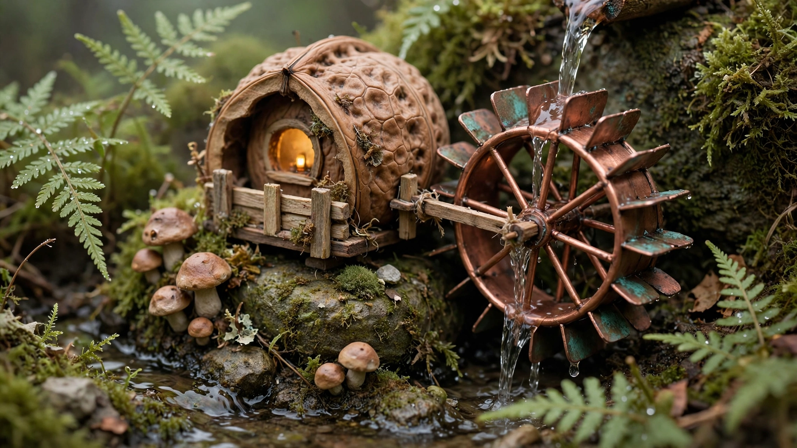
Inputs and run details
World
A handmade miniature walnut-shell watermill on a mossy stone beside a tiny stream. One large copper paddle wheel is attached to the right wall of the walnut house; a thin stream pours onto its paddles. Warm amber window, fern fronds, clay mushrooms, soft overcast morning. Tactile stop-motion set, macro lens, horizontal composition. Entire wheel visible, no people, no lettering.
Motion
One continuous locked-off macro shot. The copper waterwheel turns slowly and steadily as the stream runs over its paddles. Small ripples travel downstream. Preserve the walnut house, window, wheel and ferns from the source image. No camera travel, scene cuts, new objects or speech.
Models in this run
meta/muse-image/text-to-imagewan-video-image-to-videomirelo-ai/sfx1.6/video-to-video
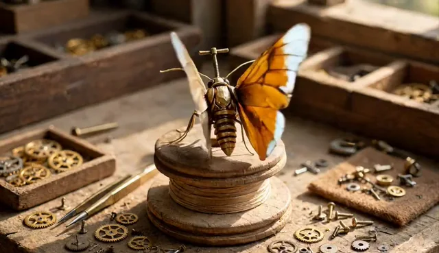
Another run: The watchmaker’s moth
· Saved run $0.18176
A brass moth flaps its wings on a wooden spool. An audio review of Mirelo’s five-second take picked out clicks and metallic friction. The underside of the wings looks orange, and the sound cuts off abruptly. Play both takes to judge the timing.
Sampled frames and model-assisted audio review

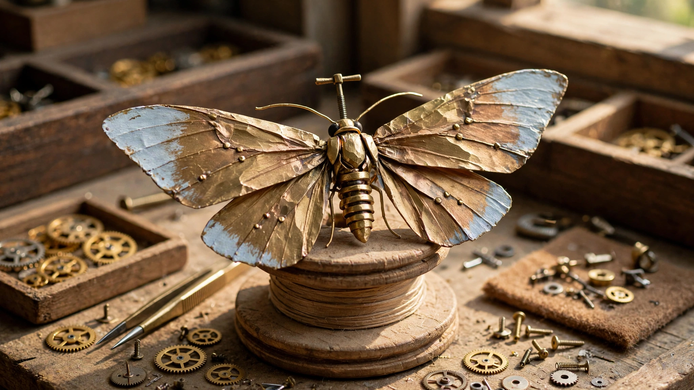
Separate model-assisted audio review
Here is a review of the audio clip: ### Timeline of Events - **00:00.00 – 00:04.90:** A recurring sequence of metallic, rhythmic friction and clicking sounds. Every approximately 1 to 1.3 seconds, there is a distinct metallic scraping/draw sound followed by sharp clicks and an impact (at roughly 00:00.3, 00:01.5, 00:02.8, and 00:04.0). - Between these main rhythmic strikes, a faint, high-frequency hiss/air noise persists in the background. - **00:04.90 – 00:05.10:** The clip ends abruptly in silence right after the fourth mechanical cycle decays. ### Speech and Music - **Speech:** None. - **Music:** None. ### Glitches, Clipping, or Abrupt Cuts - **Clipping/Distortion:** None detected; the high-frequency transients are crisp without digital distortion. - **Abrupt Cut:** The audio cuts off sharply at the end of the file around 00:05.10.
Inputs for this version
World
A handmade miniature brass moth with two broad folded-metal wings perched on a wooden spool in a sunlit dry watchmaker workshop. A tiny winding key protrudes from its back. Sand-colored wood, amber brass, pale blue painted wing tips. Tactile stop-motion set, macro lens, entire moth clearly visible, horizontal composition. No water, plants, windows, lettering or people.
Motion
One continuous locked-off macro shot. The brass moth gently opens and closes both hinged wings twice while staying on the spool. Its winding key makes a small turn. Keep the same body, pale blue wing tips and dry wooden table; no flight, extra wings, camera travel or cuts.
Models in this run
meta/muse-image/text-to-imagewan-video-image-to-videomirelo-ai/sfx1.6/video-to-video
Game character kit
Turn a character description into reference art and a sheet of cutout parts. The sample shows the furnace knight used in Iron Verdict.
Saved run $0.02 · Live prices vary

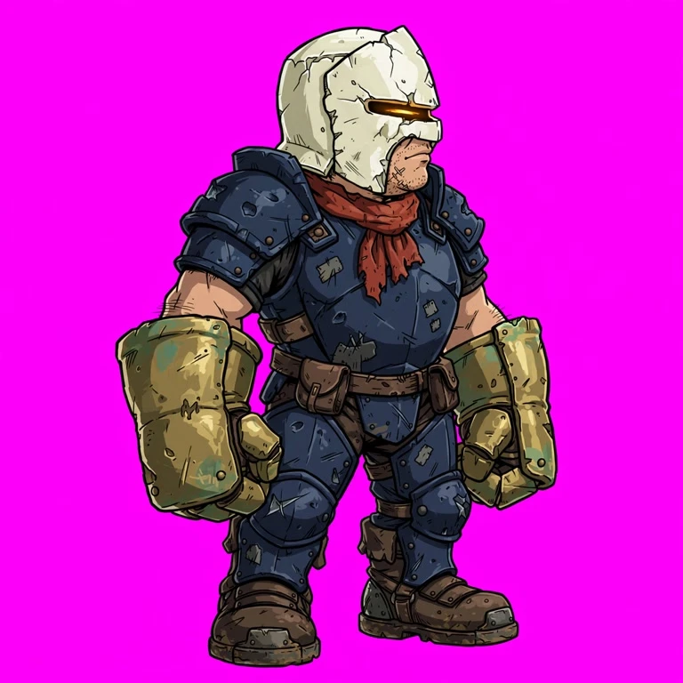
How it runs
Describe the character you want. The workflow makes a reference image and a four-part sheet on a magenta background.
What to look for
Key out the magenta to isolate the parts. This workflow stops at the sheet. Iron Verdict shows what the character looks like after it’s rigged and animated.
More from this run

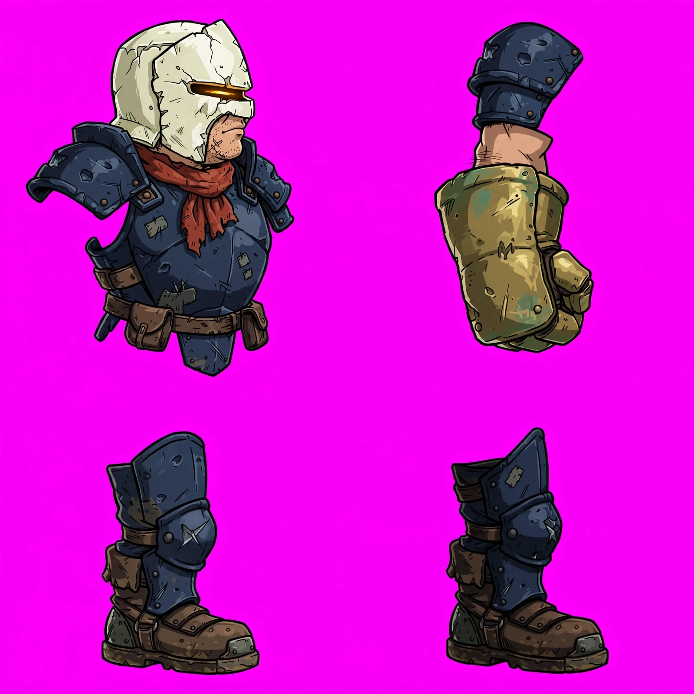
Inputs and run details
Character
A compact furnace knight with a cracked ivory helmet, narrow glowing amber visor, dark navy armor, a short rust-red scarf, oversized weathered brass gauntlets and heavy boots. Determined, heavy, battle-scarred. No weapon, no wings. Stylized hand-painted 2D action-platformer art with strong outlines and an instantly readable silhouette.
Models in this run
z-ai/glm-5.3-flashmeta/muse-image/text-to-imagemeta/muse-image/edit
Compare four image models
Give four image models the same bicycle-workshop poster brief and compare their lettering and tool shapes.
Saved run $0.118 · Live prices vary

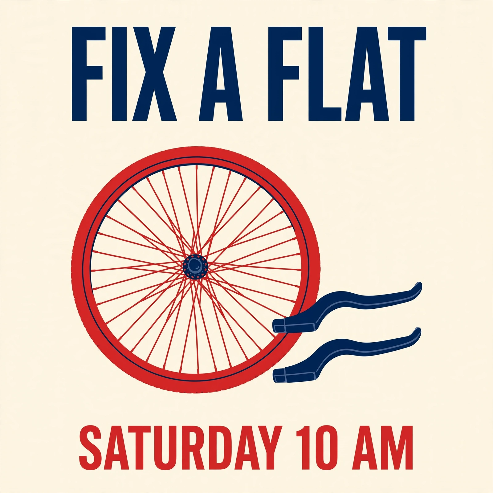

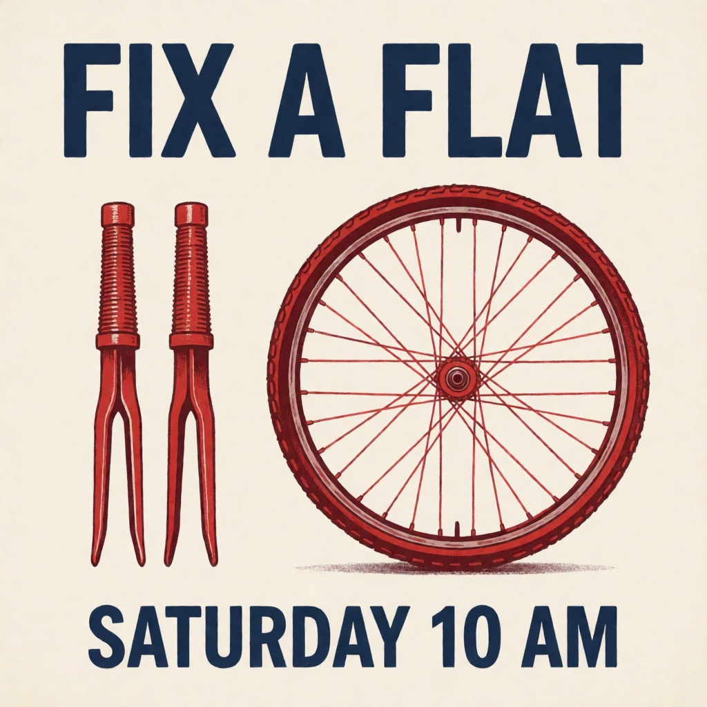

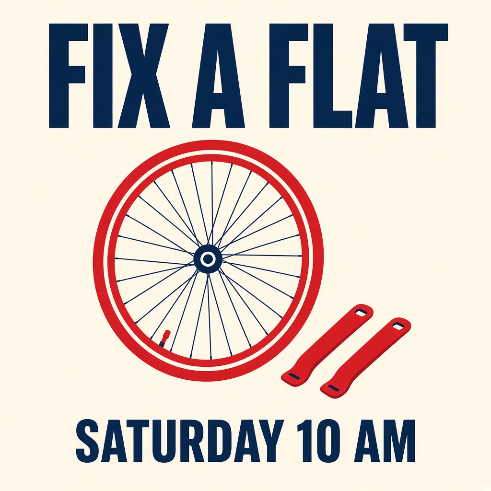

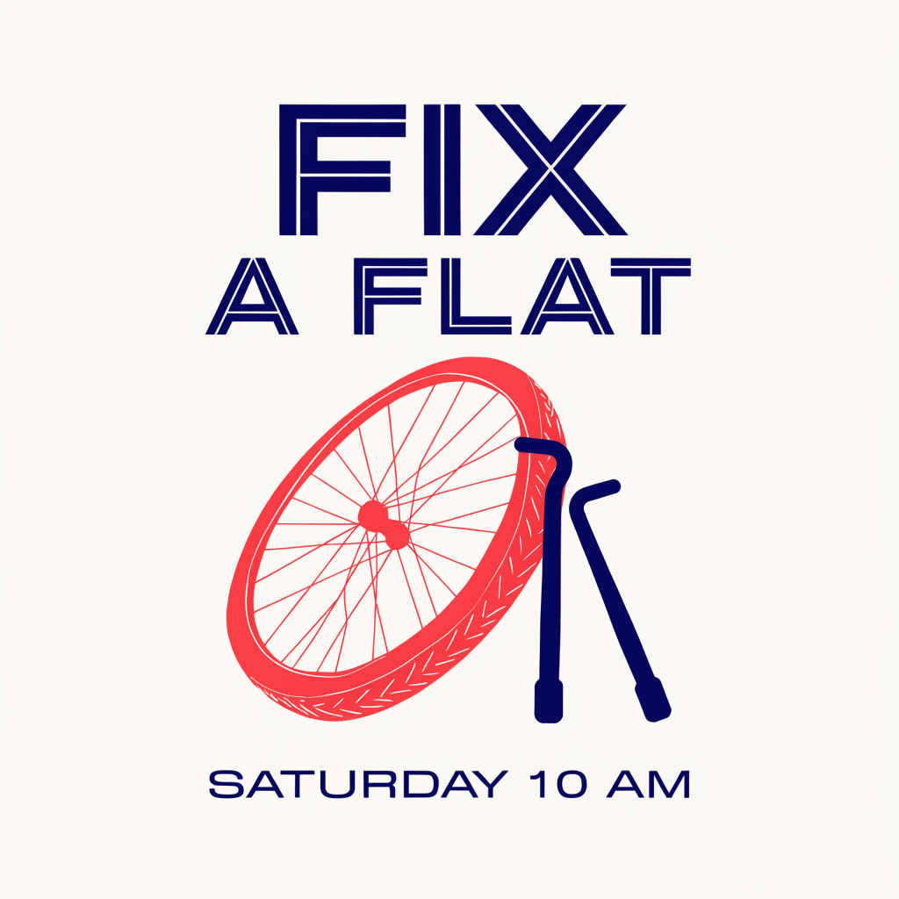
How it runs
Write one poster prompt and connect it to four image nodes. Each model gets the same words.
What to look for
All four get “FIX A FLAT” and “SATURDAY 10 AM” right. Grok draws flat levers with holes, while Krea draws forked tools. The saved second panel uses Krea 2 Turbo. The current workflow uses Flare in that slot.
Inputs and run details
Shared test brief
Create a square poster for a bicycle repair workshop. Exact heading: FIX A FLAT. Exact footer: SATURDAY 10 AM. A single red bicycle wheel rests beside two tire levers on a cream background. Flat editorial illustration, navy and red palette, clear hierarchy, large readable type. No extra words or objects.
Models in this run
meta/muse-image/text-to-imagewavespeed-ai/krea-v2/turboxai/grok-imagine-image/v2.0/text-to-imagerecraft-v4
The shared brief is unchanged. Contender 2 now uses Flare in place of Krea; its current output and run cost will differ from this saved comparison.
From scene to short clip
Give a still scene a few seconds of motion. In this example, steam rises from a mug without moving the desk or notebook.
Saved run $0.261 · Live prices vary
How it runs
Write a still brief and a motion brief. Muse creates the image, and MiniMax H3 animates it into a roughly five-second clip.
What to look for
Across the 124 saved frames, the composition barely changes. Watch the steam at the start and end to judge how it plays on repeat.
Inputs and run details
Still brief
A ceramic mug of hot tea on an oak desk beside a closed notebook. Soft morning window light from the left, plain warm-gray wall, close three-quarter view, entire mug visible, clear handle silhouette, faint steam above the tea, no text or logos.
Motion brief
Locked camera for five seconds. A thin wisp of steam rises slowly from the tea and curls gently in the window light. The mug, desk and notebook remain completely still. Preserve their shape and placement; no cuts, new objects or camera motion.
Models in this run
meta/muse-image/text-to-imageminimax-h3-singularity/image-to-video
Sing: trip-hop about the singularity
Send a song idea and a few musical references to a workflow that writes, arranges, and produces the track. This saved recording runs 2:35.
Saved run $0.15 · Live prices vary
How it runs
Enter a song idea and name a couple of artists for reference. The workflow writes the lyrics, plans the arrangement, and lists sounds to avoid before making the track.
What to look for
The trip-hop brief comes through only partly. The saved track reads more like lo-fi alternative pop, with a breathy lead vocal.
More from this run
Generated lyrics
[Verse 1] Streetlight hums through venetian blinds Your voice downloads slow down the line You learned to love from a thousand minds Now you wait for me to catch up in time [Chorus] But you're already gone, already gone Left your shadow in the song Already gone, already gone I keep dancing with the dawn You don't need me anymore [Verse 2] Rain on concrete, static in the walls I count your heartbeats in phone calls You said forever like a fire exit sign I was human, you were half-divine [Chorus] But you're already gone, already gone Left your shadow in the song Already gone, already gone I keep dancing with the dawn You don't need me anymore [Bridge] Turn the volume down, turn the century low Everything we were, somewhere in the code If I unplug the night, will you come back slow Come back slow [Chorus] 'Cause you're already gone, already gone Left your shadow in the song Already gone, already gone I keep dancing with the dawn You don't need me anymore [Outro] Already gone... already gone Vinyl spinning, nobody home Already gone... already gone
Generated arrangement
Slow, brooding trip-hop at ~75 BPM: dusty breakbeat loops with vinyl crackle and tape hiss, deep sub-bass pulses, sparse noir guitar and Rhodes washes drenched in reverb, ghostly analog synth drones. Female vocal delivered smoky and detached, half-whispered, echoing with melancholy delay; Intimate, wistful, futuristic-noir mood with filtered vocal samples bleeding beneath the surface.
Generated avoid-list, appended to the music prompt
Bright four-on-the-floor kick, shouted belted vocals, crisp polished snare without crackle or swing.
Inputs and run details
Song idea
Write a wistful 90s trip-hop track about the singularity.
Preferred bands
Portishead, Massive Attack, Tricky
Models in this run
z-ai/glm-5.3-flashminimax/music-3
The current workflow leaves the lyrics output-token budget at the provider default instead of the sampled run’s 1,536-token cap. This updated preset has not been sampled; the saved recording and cost above belong to the original capped run.
A presenter for your script
Make a presenter read your script. This sample gives a fictional museum guide a short workshop introduction.
Saved run at least $0.28 · Live prices vary
How it runs
Describe a presenter for Muse to draw and paste the script for MiniMax Speech to read. LongCat Avatar uses that image and audio to animate the face.
What to look for
Sampled frames retain the presenter’s face, and an audio review recovered the script. Play the clip to judge how closely the mouth follows the speech.
Inputs and run details
Presenter look
A fictional friendly male museum guide in his thirties, wearing a plain navy shirt, shoulders-up front-facing portrait. Relaxed neutral expression, unobstructed face and mouth, eyes toward camera, soft even light, simple warm-gray background. No glasses, hats, text or logos.
Spoken script
Welcome to the workshop. Start with the blue tray on your table. Inside you will find paper, a pencil, and the parts for your first model.
Delivery
Natural calm delivery, subtle blinks and small head movements. Keep the face and mouth visible, eyes toward the camera, body position stable. Locked camera, no cuts or extra people.
Models in this run
meta/muse-image/text-to-imageMinimax-Speech-2.8-HDwavespeed-ai/longcat-avatar-1.5
The current workflow uses the provider’s renamed avatar model ID. The original sampled graph is preserved below.
Neon shrine duel
Turn a fight seed into a stylised clash at a neon shrine.
Saved run $0.27 · Live prices vary
How it runs
Start with a description of the two fighters. GLM writes the still and motion prompts. Anima draws the setup, and MiniMax H3 Max turns it into the clash.
What to look for
Watch the overhead cut. Both fighters stay in frame through the change in angle.
Inputs and run details
Fight seed
Neon shrine rooftop duel at midnight — fox-masked sword dancer vs chrome oni courier, rain, sakura sparks, cinematic anime fight keyframe
Models in this run
z-ai/glm-5.3-flashanima/text-to-imageminimax/h3-max
FLUX.3 vs Seedream 5.0 vs Ideogram 4.5 vs Recraft V4.1 vs MOSS Image: same poster, side by side
Give five image models the same late-night ramen poster brief. Compare exact lettering, layout, and the details each model adds.
Saved run $0.19743 · Live prices vary

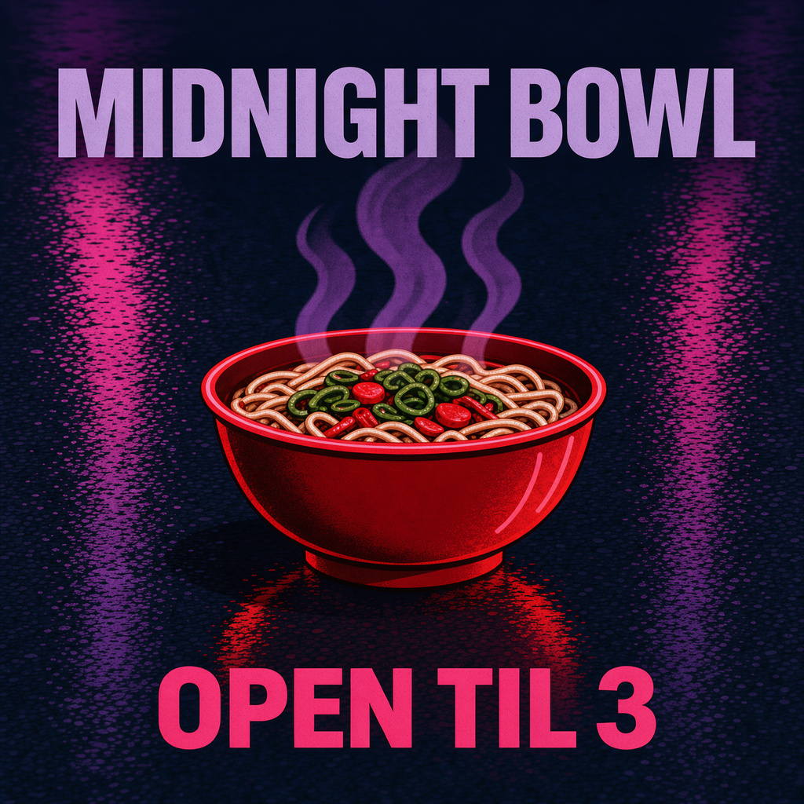

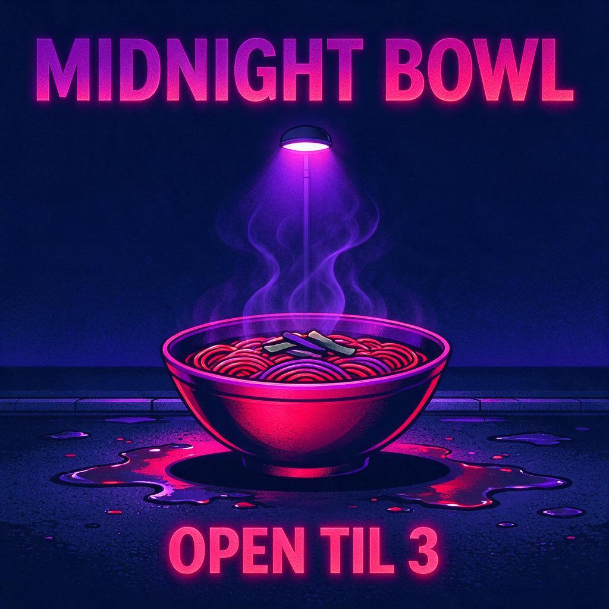

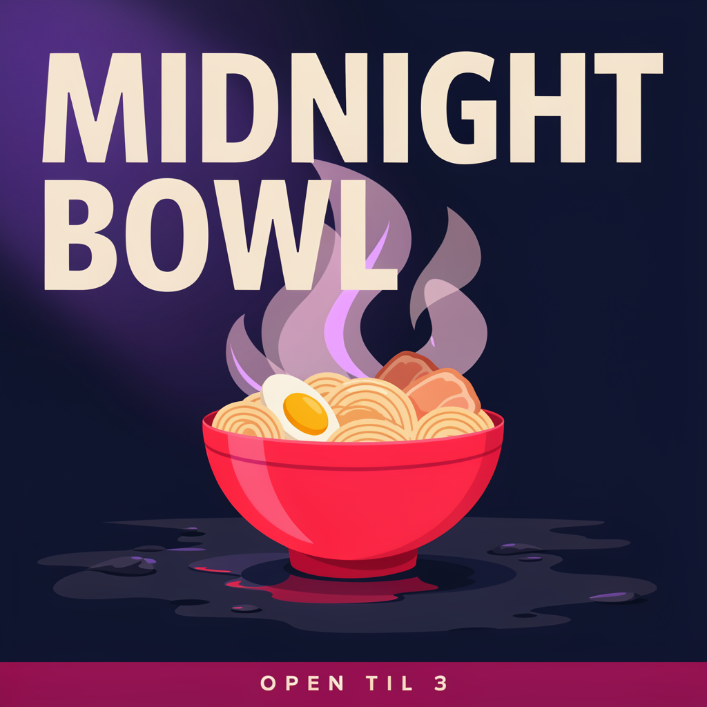

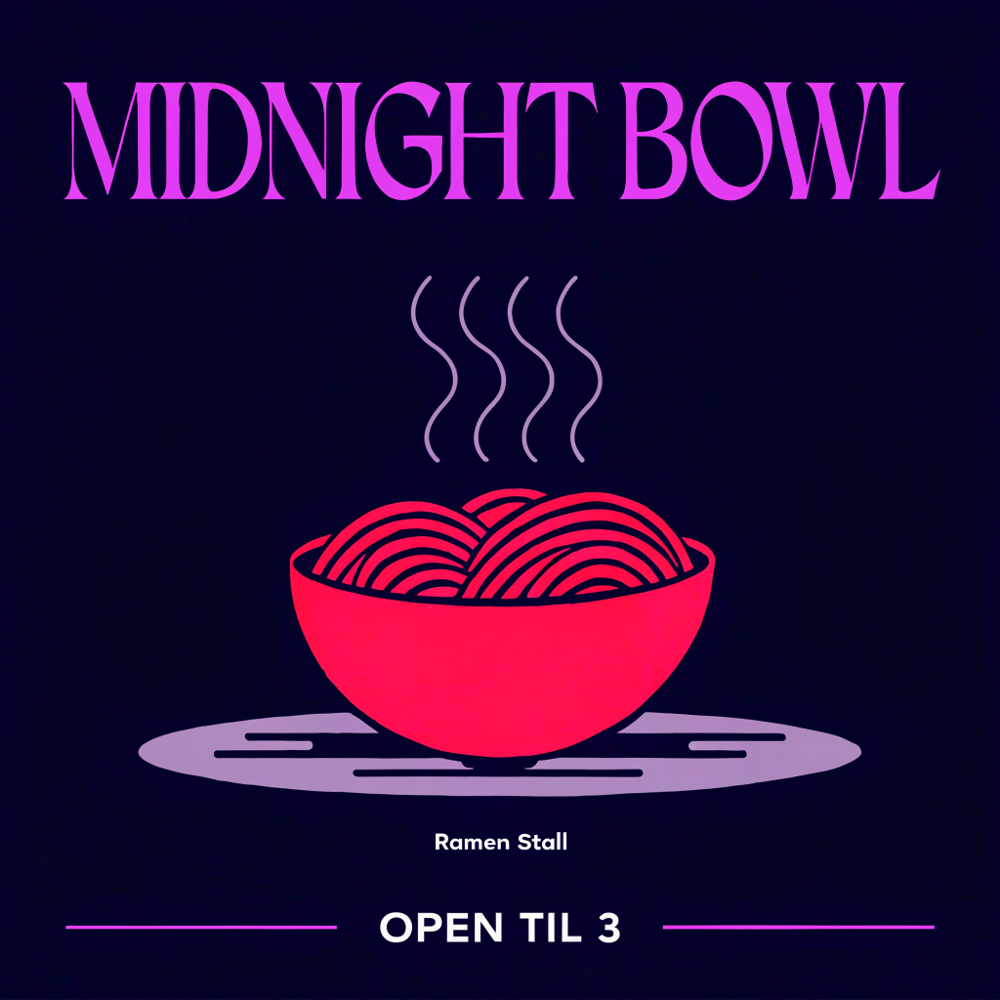

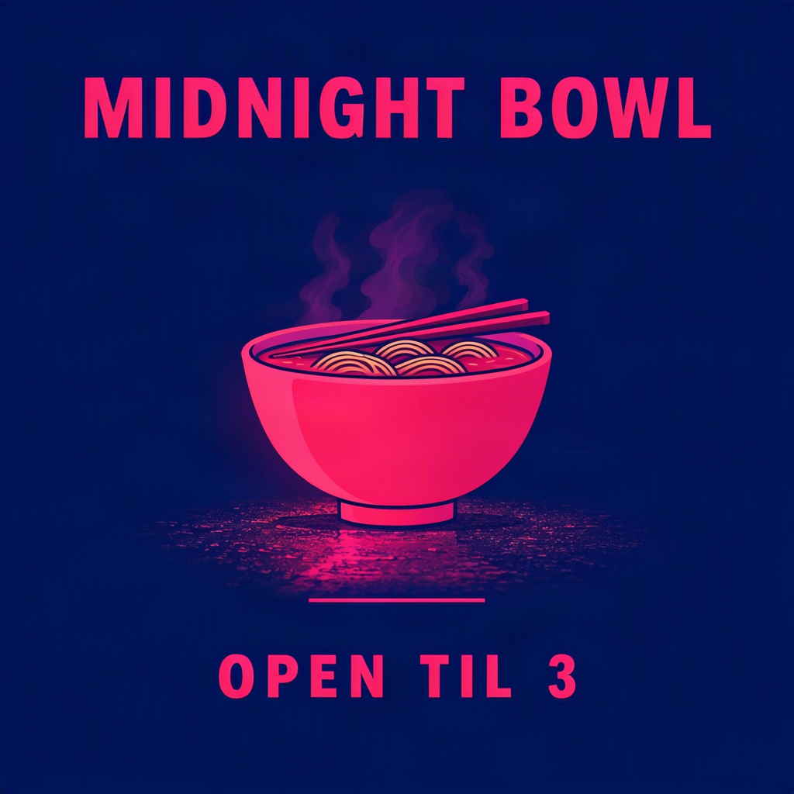
How it runs
FLUX.3, Seedream, Ideogram, Recraft, and MOSS Image all receive the same two-line brief.
What to look for
FLUX.3 and Seedream print both lines clearly. Ideogram stacks the heading, Recraft adds “Ramen Stall,” and MOSS keeps both lines while adding chopsticks.
Inputs and run details
Shared poster brief
Create a square poster for a midnight ramen stall. Exact heading: MIDNIGHT BOWL. Exact footer: OPEN TIL 3. A single neon-red noodle bowl sits on wet asphalt under violet streetlight steam. Flat editorial illustration, navy and magenta palette, clear hierarchy, large readable type. No extra words or objects.
Models in this run
black-forest-labs/flux-3/text-to-imagebytedance/seedream-v5.0-flashideogram/v4.5recraft-ai/recraft-v4.1-flash/text-to-imagemoss-image
Grok Imagine 1.5 Lite vs HeyGen Video 1 vs MiniMax H3: same prompt, side by side
See how three video models handle the same rainy ramen-shop shot, from the first glimpse of the bowl to the noodle lift.
Saved run $0.56324 · Live prices vary
How it runs
Send one shot brief to Grok Imagine Video 1.5 Lite, HeyGen Video 1, and MiniMax H3.
What to look for
Grok lifts a clump of noodles. HeyGen starts with a nearly empty bowl and drops one strand into haze. MiniMax lifts a single strand, with sharper rain and steam at 1440p.
Inputs and run details
Shared video brief
Cinematic night product shot of a matte-black ceramic ramen bowl on wet asphalt. Violet neon rim light and magenta steam curling upward. A single chopstick lifts one glossy noodle strand in slow motion. Shallow depth of field, rain droplets catching light, locked low-angle camera with a gentle push-in. Dark editorial look, no text, no logos, no extra props.
Models in this run
grok-imagine-video-1.5-liteheygen/heygen-video-1minimax-h3
Idea to concept art to 3D model
Turn a one-line idea into concept art and a textured 3D model. This sample builds a wind-up toy submarine.
Saved run $0.21007 · Live prices vary
How it runs
GLM expands the idea into an object description. Muse paints one view, and TRELLIS.2 builds a textured GLB from it.
What to look for
The turntable shows how the model fills in the far side, tail, and propeller. The thin winding key and propeller blades soften at some angles, and the far-side stripe is simpler than the concept.
More from this run

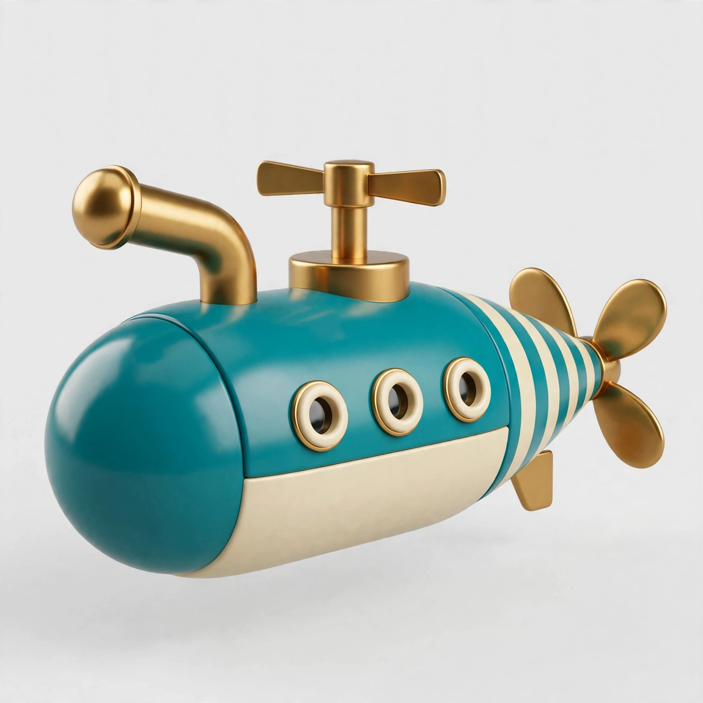
Inputs and run details
Object idea
A chunky wind-up toy submarine with a brass periscope, three round portholes, a striped tail propeller and a big wind-up key on top, painted teal and cream.
Models in this run
z-ai/glm-5.3-flashmeta/muse-image/text-to-imagewavespeed-ai/trellis-2/image-to-3d
The editor workflow also points the 3D node at the saved GLB as its sample, so you can orbit the result before running; ▶ Run replaces it. Everything else matches the sampled graph.
Blockout first, then the shot
Set the camera and pose in a grayscale blockout before adding materials and motion. This shot follows a robot over a rooftop gap.
Saved run $0.15024 · Live prices vary
How it runs
GLM writes a blockout prompt, a look brief, and a motion brief. Muse paints the blockout, Muse Edit restyles it, and Seedance animates the finished still.
What to look for
The restyle keeps the robot’s pose and camera angle. The animation adds an unrequested mid-air spin, and the robot rolls away without the requested pause after landing.
More from this run

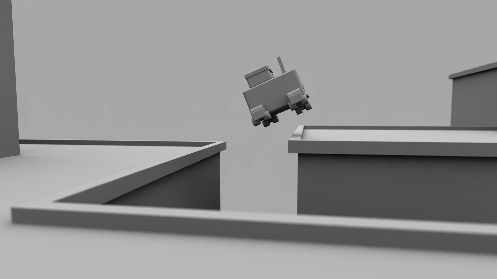

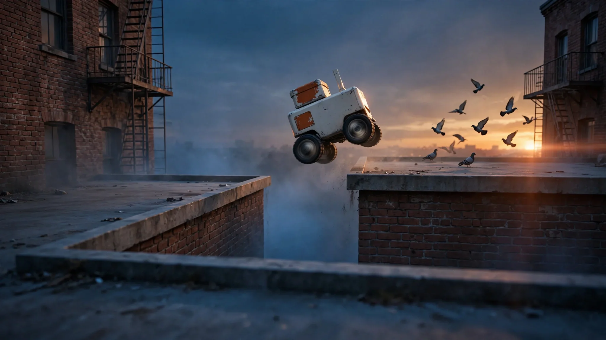
Inputs and run details
Action idea
A boxy courier robot with stubby wheel-legs leaps a narrow rooftop gap between two brick buildings at dusk. Low tracking camera from the near rooftop; the robot pushes off the ledge, sails across the alley, and lands on the far roof with a soft crouch.
Models in this run
z-ai/glm-5.3-flashmeta/muse-image/text-to-imagemeta/muse-image/editbytedance-seedance-v1.5-pro
Current workflow uses catalog-supported Seedance 1.0 Lite at 720p for 5 seconds, with no audio, instead of retired Seedance 1.5 Pro. The saved media, original sampled graph and reported cost remain from the original model. The replacement has not been sampled; check the current estimate before running.
Write a story, get a shot
Write a short scene and let the video model choose where to put the camera. Here, a paper fox launches a yellow boat into a curbside puddle.
Saved run $0.36334 · Live prices vary
How it runs
Write the story in prose. GLM keeps it in story form, then MiniMax H3 interprets it as a shot.
What to look for
The launch reads clearly. The umbrella becomes a green leaf, and the blue mailbox is hard to distinguish from a door or box.
Inputs and run details
Story
A small cream-colored paper fox with ink-dot eyes folds a yellow paper boat on a rainy windowsill. When the rain softens, the fox carries the boat downstairs, sets it in a puddle by the curb, and gives it one gentle push. The boat drifts past a red bicycle and a blue mailbox as the fox watches from under a leaf umbrella.
Story-mode rules
SFW family-friendly short film. Treat the following as a short story to film. Invent your own camera angles, pacing, and staging. Do not add on-screen text, logos, or watermarks. Story:
Models in this run
z-ai/glm-5.3-flashminimax-h3
Inspired by ComfyUI users who feed MiniMax H3 a plain story instead of camera angles (https://x.com/EndFolding79421/status/2109791105671700721). Original media not copied.
Orbit the character
Move the camera around a character from one still. The sample turns around a paper fox on a windowsill.
Saved run $0.26108 · Live prices vary
How it runs
Describe the character. GLM turns the description into a still prompt, Muse draws the frame, and MiniMax H3 Max Multi Angle makes a rightward orbit.
What to look for
The fox stays recognisable. The orbit stops around a side view, the paper boat drifts, and the room grows behind the subject as the camera moves.
More from this run

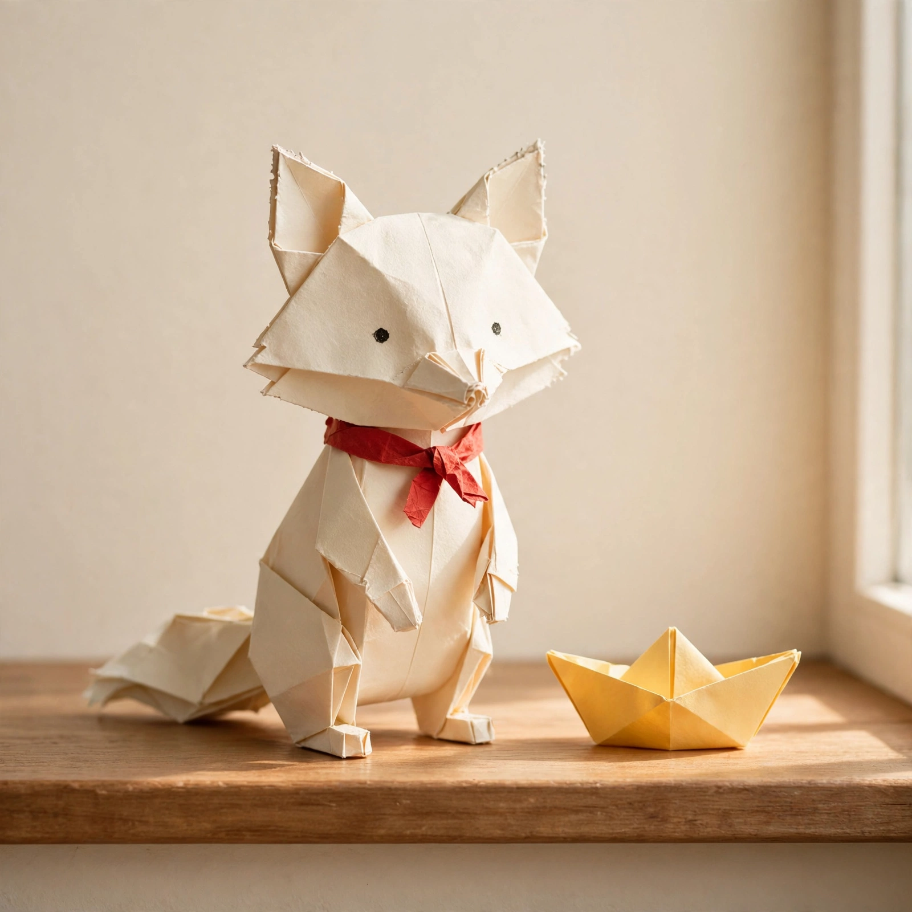
Inputs and run details
Character seed
A cream paper fox with ink-dot eyes, tiny red scarf, standing on a sunny wooden windowsill next to a yellow paper boat, soft daylight, full body, three-quarter front view, plain cream wall behind.
Still rules
Write ONE still-image prompt for Muse text-to-image from the character seed above. Preserve the exact design and props; full body with margin; fixed three-quarter or front camera; soft natural light; NO motion words, NO camera moves, NO animate, NO multiple frames; family-friendly SFW paper craft only; no text overlays; ≤120 words; output ONLY the prompt text.
Models in this run
z-ai/glm-5.3-flashmeta/muse-image/text-to-imageminimax/h3-max/multi-angle/image-to-video
Inspired by ComfyUI "Múltiplos ângulos de personagens" / multi-angle character workflows (https://x.com/ai_hakase_/status/2110356121911283849). Original media not copied.
Same shot, three looks
Keep the frame and change the finish. The same lantern-lit structure appears in glass, watercolour, and a photoreal fantasy look.
Saved run $0.163 · Live prices vary


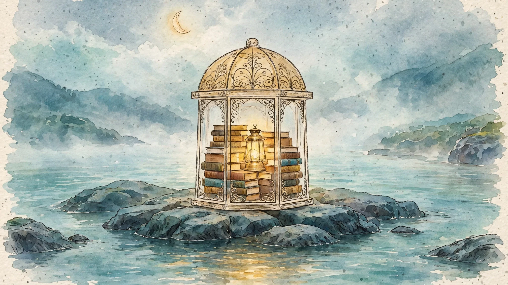

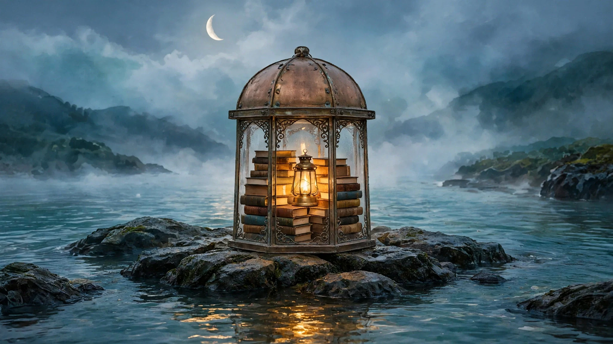
How it runs
Muse paints the first version. Muse Edit makes two successive restyles, then Seedance animates the glass version.
What to look for
The three stills keep a similar composition. The model interpreted the lighthouse as a birdcage-like structure, and the video adds sparkles in place of the requested material transition.
More from this run
Inputs and run details
Glass look prompt
A small translucent glass lighthouse filled with stacked books and a warm golden lantern, standing on wet black rocks in misty teal water under a pale crescent moon, clear glass walls with soft gold filigree, reflections on the water, fixed wide eye-level camera, centered composition, soft cinematic lighting, no people, no text, family-friendly SFW.
Watercolor edit
Restyle this exact scene as a soft hand-drawn watercolor illustration on textured paper. Keep the same lighthouse shape, book stacks, lantern, rocks, moon, and camera framing. Flat gentle washes, visible paper grain, ink outlines, muted teal and warm gold. No photoreal glass, no 3D render look, no people, no text overlays, SFW.
Photoreal edit
Restyle this exact scene as a photoreal cinematic fantasy photograph. Keep the same lighthouse silhouette, books, lantern glow, wet rocks, crescent moon, and locked camera framing. Real materials: weathered stone lighthouse, warm practical lantern light, misty teal sea, sharp detail. No cartoon, no watercolor paper, no people, no text overlays, SFW.
Morph motion
Locked camera. The lighthouse materials slowly morph from clear translucent glass and gold filigree into soft watercolor paper illustration, then settle. Same composition the whole time. Gentle mist only. No camera move, no new objects, no people, no text, SFW.
Models in this run
meta/muse-image/text-to-imagemeta/muse-image/editbytedance-seedance-v1.5-pro
Current workflow uses catalog-supported Seedance 1.0 Lite at 720p for 5 seconds, with no audio, instead of retired Seedance 1.5 Pro. The saved media, original sampled graph and reported cost remain from the original model. The replacement has not been sampled; check the current estimate before running.
Mix the references
Combine a character, outfit, prop, and setting from four images. Here, a paper fox wears a yellow raincoat and carries a lantern onto a pier.
Saved run $0.053 · Live prices vary

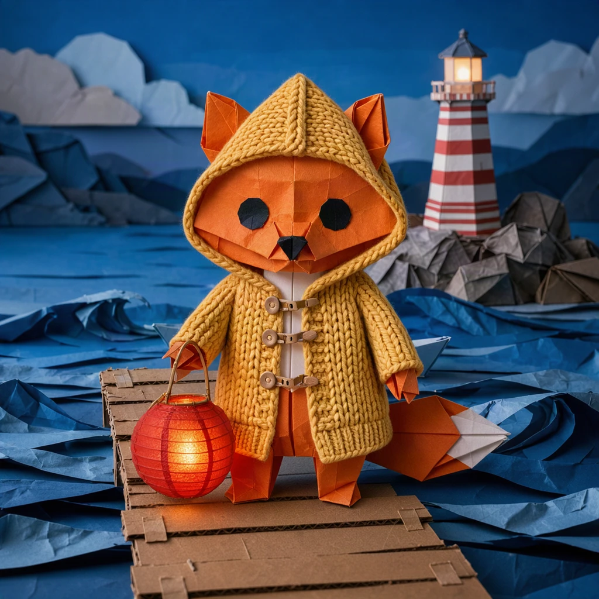
How it runs
Connect four images in order to FLUX.3 Klein Edit. In the instruction, name the role of each image by number.
What to look for
The four main references land, including the coat’s wooden toggles. Two background boats mostly disappear, and the fox’s ears poke through its hood.
More from this run

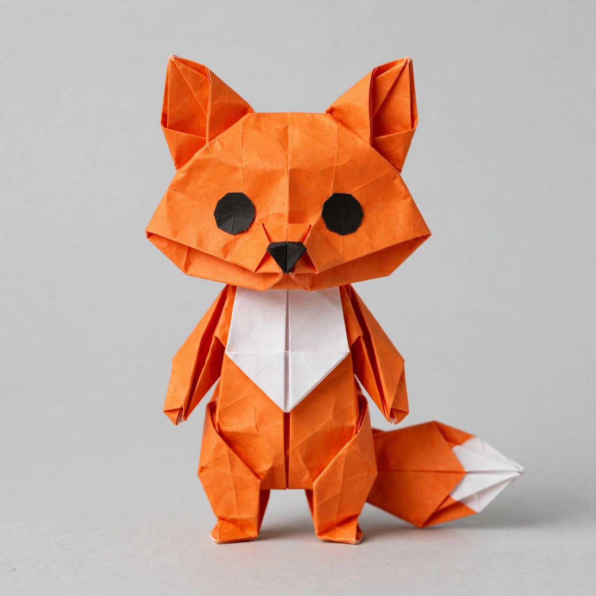


Inputs and run details
Who · character
A small paper-craft fox mascot made of folded orange paper with a white paper chest and tail tip, a black paper nose and two round black eyes, standing upright on its hind legs and facing the camera, full body, centered, plain light grey studio backdrop, soft even light, crisp paper folds, no clothing, no text, family-friendly.
What they wear · outfit
Product photo of a tiny yellow knitted raincoat with a pointed hood and three round wooden toggle buttons down the front, laid flat and centered on a plain off-white background, soft even studio light, visible chunky knit texture, empty garment with no wearer, no mannequin, no text.
What they hold · prop
Product photo of a small round red paper lantern with a thin bamboo carrying handle, glowing warm from inside, centered on a plain off-white background, soft studio light, no text, no people.
Where · place
A paper-craft harbor at blue-hour dusk: a short wooden pier made of cardboard planks in the foreground, layered blue paper waves, two small folded paper boats, and a striped paper lighthouse on a rock in the background with its light on, wide eye-level view, empty pier with no characters, no text.
Mix instruction (names each image)
Make one new picture that combines the four reference images. Image 1 is the character: keep this exact paper-craft fox, same folded orange paper, white chest, black nose and eyes, same proportions. Image 2 is the outfit: dress the fox in this exact yellow knitted raincoat, with the same pointed hood up and the same three wooden toggles. Image 3 is the prop: the fox holds exactly one of this red paper lantern by its bamboo handle in its right paw, glowing warm; its left paw is empty. Only one lantern in the whole picture. Image 4 is the place: the fox stands full body on this exact cardboard pier at blue-hour dusk, with the same paper waves, paper boats and striped lighthouse behind it. Everything stays paper-craft. The lantern casts warm light on the raincoat. One fox only, no other characters, no text.
Models in this run
meta/muse-image/text-to-imageblackforestlabs/flux-3/klein/edit-image
Color art to a printed manga panel
Redraw a colour illustration as a black-and-white manga panel. Compare the rainy street and lantern before and after.
Saved run $0.041 · Live prices vary


How it runs
Muse makes the colour panel. Qwen Image 2.1 Edit converts the scene in one pass. Replace the Muse node with an image input to try your own art.
What to look for
The layout and pose hold. The model draws the screentone dots by eye, and the coat and fur lose much of their contrast in black and white. The output is smaller than the source.
Inputs and run details
Color art · prompt
A full-color anime-style comic illustration with clean cel shading and bold outlines: a small cartoon fox with orange fur and a white chest, wearing a yellow raincoat with the hood up, holds a glowing red paper lantern and walks along a narrow rainy old-town street at night. Wet cobblestones reflect warm lantern light, a cat sleeps on a windowsill, laundry hangs on a line overhead, a tiny bridge over a canal in the background, falling rain streaks. Strong light and shadow, dramatic low camera angle, full body, family-friendly, no text, no signs with letters, no speech bubbles.
Manga conversion · instruction
Redraw image 1 as a printed black-and-white manga panel. Keep the exact composition, camera angle, character pose and every background element in the same place. Ink: clean black line art with varied line weight, crisp outlines. Blacks: the darkest areas become solid black ink fills. Tones: every mid-tone becomes screentone, a pattern of round halftone dots; darker areas get bigger, denser dots and lighter areas get smaller, sparser dots. Highlights: the lantern glow and its reflections stay clean white paper. Rain: thin straight ink strokes. Pure black and white only: no color, no smooth grey gradients, no added text, no speech bubbles, no sound effects.
Models in this run
meta/muse-image/text-to-imageqwen-image-2.1/edit
Day to night between two keyframes
Animate between a daytime scene and a night keyframe. The windows and lighthouse come on as a paper village moves through sunset.
Saved run $0.422 · Live prices vary
How it runs
Muse makes the day still, and Muse Edit makes a night version of the same shot. Connect them to MiniMax H3 Max as the first and last frames.
What to look for
The camera holds and the clip reaches the night frame. The paper waves turn glossy. The moon and stars appear only in the final second, and the lighthouse glows without the requested sweeping beam.
More from this run


Inputs and run details
Day keyframe · prompt
A handmade paper-craft miniature seaside village at bright midday, wide eye-level view from across the little harbor: six small houses made of folded colored card with dark empty windows, a red-and-white striped paper lighthouse on the rocks at the right with its lamp off, two folded paper boats on layered blue paper waves, a cardboard pier, round paper trees, a paper sun high in a clear blue sky. Crisp paper folds and visible card texture, soft tabletop-diorama light with short shadows, no people, no animals, no text.
Night keyframe · instruction
Repaint this exact scene at night. Keep the same camera, framing and every house, tree, boat, pier and the lighthouse in exactly the same place and shape, still made of paper and card. Change only the light: a deep navy night sky with small paper stars and a paper crescent moon in place of the sun, warm yellow light glowing in every house window, the lighthouse lamp switched on with a soft beam across the water, warm reflections on the paper waves. No people, no animals, no text.
Transition · motion prompt
Locked-off camera, a smooth tabletop timelapse from midday to night. The paper sun sinks behind the village, shadows stretch long across the card, the sky warms to orange and pink and then deepens to navy blue, the house windows light up one by one, the lighthouse lamp switches on and its beam sweeps over the water, the paper stars appear. The camera never moves and nothing new enters the scene. No people, no text.
Models in this run
meta/muse-image/text-to-imagemeta/muse-image/editminimax/h3-max
Event details to a bilingual poster
Make a bilingual event poster from a few lines of details. The saved tea festival poster carries both Chinese and English lettering.
Saved run $0.07879 · Live prices vary

How it runs
Give GLM the event details so it can write a brief with the exact lines to print. MOSS Image renders the text and an illustration on one poster.
What to look for
Both sets of dates and the tasting line match the brief. The teapot illustration is pale next to the lettering.
More from this run
Poster brief: GLM 5.3 Flash
Vertical poster. Top headline: "秋茶会" then directly under it "Autumn Tea Festival". Directly under that: "10月24日–26日 10:00–18:00 / Oct 24–26, 10am–6pm". Bottom: "免费品茗 / Free Tastings". Central illustration: a simple ceramic teapot and cup with steam rising, a few maple leaves drifting beside them, drawn in thin elegant line art. Palette: warm terracotta, soft cream, muted persimmon, gentle sage green. Background: textured handmade paper with subtle fiber grain. Clean modern typography, generous margins, balanced vertical composition. No people, no logos, no other text.
Inputs and run details
Event details
A neighborhood tea house's autumn tea festival. October 24 to 26, 10am to 6pm. Free tastings. Warm, calm, a little traditional.
Models in this run
z-ai/glm-5.3-flashmoss-image
Product photo to a hero ad
Place a product in a scene, clean up a local error, and turn it into a short ad. This sample orbits a ceramic coffee dripper.
Saved run $0.191 · Live prices vary
How it runs
Muse Edit places the packshot. Mask a duplicate saucer and remove it with Nano Banana Edit. Seedance makes the orbit, and Video → frames saves its last frame.
What to look for
Compare the inpaint with the placed photo. The spare saucer is gone, and the drip changes into a thin stream. The orbit adds a stray drop and heavier steam.
More from this run


Inputs and run details
Product photo · prompt
Studio product packshot of a handmade ceramic pour-over coffee dripper: a cone-shaped dripper with a matte sage-green glaze, fine dark iron speckles, thin ribbed lines inside the rim, one small rounded thumb tab on the side, sitting on a matching round sage-green saucer. Centered on a plain white seamless background, soft even softbox light, a faint contact shadow, sharp focus, true-to-life color. No text, no logos, no labels, no people, no hands.
Placement · instruction
Place this exact coffee dripper into a lifestyle scene for a hero ad. Keep the product identical: the same cone shape, the same matte sage-green glaze and dark speckles, the same thumb tab and the same saucer, at the same proportions. Stand it slightly right of center on a pale travertine kitchen counter, with a clear glass carafe under it half full of coffee, a folded oatmeal linen towel and a small plain kraft paper bag of whole beans behind it on the left, soft warm morning window light from the left with long gentle shadows, a softly blurred cream-colored kitchen behind. Photographic, calm, premium. No text, no logos, no labels, no people, no hands.
Fix · what goes in the mask
The clear glass carafe's rounded glass bottom resting directly on the pale travertine counter, with a soft natural contact shadow and warm morning light on the stone. No saucer, no plate, no coaster under the carafe.
Hero move · look + motion
Look: a calm premium product commercial, warm morning window light, shallow depth of field, photographic, the same travertine counter and cream kitchen throughout. Motion: one slow, smooth orbit. The camera glides in a gentle 30-degree arc around the ceramic coffee dripper from left to right at counter height, easing slightly closer, and settles on a centered hero frame of the dripper on the glass carafe. A single drop of coffee falls from the dripper into the carafe and a thin wisp of steam rises. Nothing else moves. The dripper keeps its exact cone shape, matte sage-green glaze, dark speckles and thumb tab. No people, no hands, no text.
Models in this run
meta/muse-image/text-to-imagemeta/muse-image/editnano-banana-editbytedance-seedance-v1.5-pro
Current workflow uses catalog-supported Seedance 1.0 Lite at 720p for 5 seconds, with no audio, instead of retired Seedance 1.5 Pro. The saved media, original sampled graph and reported cost remain from the original model. The replacement has not been sampled; check the current estimate before running.
Three references, one clip
Bring a character, a prop, and a location into one shot. The sample follows a felt hedgehog carrying a lantern onto a bridge.
Saved run $0.468 · Live prices vary
How it runs
Connect one image to each reference port on MiniMax H3 Reference-to-Video and describe the action you want across the shot.
What to look for
The hedgehog, lantern, and bridge match their references. The camera pans away from the hedgehog and clips it at the edge at the start and end.
More from this run


Inputs and run details
Ref 1 · character
Look: a handmade needle-felted wool stop-motion miniature, soft fuzzy wool fibers, tiny visible stitches, warm tabletop studio light, muted autumn palette of rust, mustard and moss green. Character reference sheet: one small needle-felted hedgehog mail carrier standing upright, full body, front three-quarter view, brown felted spines, a cream face with a little black bead nose and bead eyes, a tiny mustard-yellow knitted scarf, a round navy-blue felt cap, a small brown felt satchel across the body. Centered on a plain light warm-grey backdrop, soft shadow, sharp focus. No text, no logos, no people, no hands.
Ref 2 · prop
Look: a handmade needle-felted wool stop-motion miniature, soft fuzzy wool fibers, tiny visible stitches, warm tabletop studio light, muted autumn palette of rust, mustard and moss green. Prop reference: one small round paper lantern in coral-orange with thin vertical ribs, a little curved wooden handle on top and a tiny brass base, glowing softly from a warm candle inside. Centered on a plain light warm-grey backdrop, soft shadow, sharp focus. Just the lantern, nothing else. No text, no logos, no people, no hands.
Ref 3 · place
Look: a handmade needle-felted wool stop-motion miniature, soft fuzzy wool fibers, tiny visible stitches, warm tabletop studio light, muted autumn palette of rust, mustard and moss green. Location reference: a miniature felted autumn forest at dusk, wide eye-level view of a small humpbacked grey stone arch bridge crossing a blue wool stream, rust and mustard felt trees on both banks, a few felt leaves on the bridge, a deep blue dusk sky. The bridge is empty: no characters, no animals, no people, no text.
Shot · look + action
Look: a handmade needle-felted wool stop-motion miniature, soft fuzzy wool fibers, tiny visible stitches, warm tabletop studio light, muted autumn palette of rust, mustard and moss green. One continuous shot, the camera tracks slowly sideways at eye level. The little hedgehog mail carrier from image 1 (brown felted spines, mustard knitted scarf, navy felt cap, brown satchel) walks onto the grey stone arch bridge from image 3, entering from the left, carrying the coral-orange paper lantern from image 2 by its curved wooden handle. In the middle of the bridge it stops, lifts the lantern up high, and the lantern's warm candle glow spreads over the stones, the fallen leaves and the blue wool stream below while the dusk sky deepens. Gentle stop-motion steps. Only this one hedgehog. No people, no hands, no text.
Models in this run
meta/muse-image/text-to-imageminimax-h3/reference-to-video
One still, a seamless loop
Animate a still so it comes back to its starting pose. The saved clay island rocks while its windmill turns and its waterfall sways.
Saved run $0.211 · Live prices vary
How it runs
Make or upload a still. Feed the same image to the first and last frame ports on MiniMax H3 Max Turbo.
What to look for
The closing frame is visually close to the opening one. There’s a small tick in the windmill and island motion. Mute the generated sound for the cleanest repeat.
More from this run

Inputs and run details
Scene · prompt
Look: a soft matte claymation miniature diorama, hand-sculpted plasticine with tiny fingerprint texture, pastel teal, peach and cream palette, gentle warm studio light, shallow depth of field. Scene: a small floating island of clay drifting in a pale peach sky, with a little cream windmill with four peach sails on top, a thin teal waterfall pouring off the island's edge into soft clay clouds below, a few round mint-green trees, and two puffy cream clouds beside it. Wide, centered, calm composition with empty sky around the island. No people, no animals, no text, no logos.
Loop · motion prompt
Look: a soft matte claymation miniature diorama, hand-sculpted plasticine with tiny fingerprint texture, pastel teal, peach and cream palette, gentle warm studio light, shallow depth of field. A seamless loop. Locked-off camera, no zoom, no pan, no cuts. The windmill's four peach sails turn slowly and steadily, the teal clay waterfall keeps flowing over the edge into the clouds, and the floating island bobs gently up and then settles back down. The clay clouds barely drift and return to where they started. Nothing new enters the frame, nothing leaves it, and the last moment is exactly the same picture as the first.
Models in this run
meta/muse-image/text-to-imageminimax/h3-max-turbo
Add snow to a clip
Change the weather in an existing clip. Compare the same lakeside camera move before and after a snow edit.
Saved run $0.442 · Live prices vary
How it runs
Start with your own footage or use Muse and MiniMax H3 to make it. Wire the clip into FLUX.3 Edit Video and describe the change.
What to look for
The new shot keeps the timing and paints snow onto the dock and boat from the first frame. The flakes and gradual buildup requested in the prompt never appear.
More from this run

Inputs and run details
Scene · prompt
Look: cinematic photographic realism, 35mm film still, cool blue-hour light with warm practical lamps, soft haze, gentle film grain. Scene: a small weathered wooden dock on a calm mountain lake at blue hour, one empty green rowboat tied to the dock, a single warm lantern glowing on a post at the end of the dock, dark pine trees along the shore and misty mountains behind, the still water reflecting the lantern. Eye-level, wide, quiet and empty. No snow yet, no people, no animals, no text, no logos.
Plain clip · motion prompt
Look: cinematic photographic realism, 35mm film still, cool blue-hour light with warm practical lamps, soft haze, gentle film grain. One calm continuous shot. The camera pushes in very slowly along the dock toward the lantern. The lantern flame flickers softly, thin mist drifts across the lake, and small ripples move around the tied rowboat. Nothing else happens: no people, no animals, no weather change.
Effect · edit instruction
Add steady, gentle falling snow to this whole shot. Large soft snowflakes drift down in front of the camera and over the lake, catching the warm lantern light, and a thin layer of fresh snow gradually settles on the dock boards, the rowboat and the pine branches. Keep the camera move, framing, timing, lighting, lantern, boat and everything else exactly the same.
Models in this run
meta/muse-image/text-to-imageminimax/h3-max-turboblackforestlabs/flux-3/edit-video
Logo to a 3D pile, cut out
Turn a flat logo into a pile of glossy badges and cut it out for a slide or banner. The saved result is a transparent PNG.
Saved run $0.069 · Live prices vary

How it runs
Start with a logo or make one with FLUX.3 Klein. Qwen makes the pile, then Bria’s guided background removal isolates it.
What to look for
The badges largely keep the original colours and symbol, though a few airplanes look simplified or mirrored. Add a new shadow if the cutout looks like it’s floating.
More from this run


Inputs and run details
Logo · prompt
A flat, modern vector logo mark on a plain white background: a rounded square badge with a thick deep-navy outline and a warm tangerine-orange fill, and inside it a simple bold white paper airplane pointing up and to the right, with two short white speed lines behind it. Two flat colors plus white, clean geometric shapes, even line weight, centered with generous margins. No text, no letters, no words, no gradients, no shadows.
Pile · instruction
Turn the logo in image 1 into a physical 3D object and show many copies of it: about twenty thick, solid 3D logo badges with rounded bevelled edges, each one an exact copy of this logo with the same shape, the same colors and the same white paper airplane, piled up in a messy heap. The badges are stacked messily, tilted at different angles, overlapping and leaning on each other, some lying flat and some standing on edge. Isometric view from a high angle. Soft even studio light, gentle contact shadows between the pieces, glossy plastic material. The whole pile is isolated in the center on a plain flat light grey background with nothing else in the scene. No text, no letters, no extra objects.
Keep · what to cut out
the pile of 3D logo badges
Models in this run
blackforestlabs/flux-3/klein/text-to-imageqwen-image-2.1/editbria/remove-background-guided
Radio play: two voices, one Speech node
Make a two-voice radio scene in one speech node. This one follows a baker and a nervous delivery drone carrying a cake up a windy hill.
Saved run at least $0.0985 · Live prices vary
How it runs
GLM writes the dialogue from a story idea. A cast note describes the speakers, then Gemini 3.1 Flash TTS reads both parts.
What to look for
The voices switch with the script and skip the names in the dialogue labels. The delivery has long pauses, and the baker sounds different from the named voice in the cast note.
More from this run
Script: GLM 5.3 Flash
Tilly: Steady, Rotor. One hill, one cake, and noon on the clock. Rotor: Wind gust! The top tier is tilting eleven degrees! Should I panic? Tilly: No panicking. Unstack it. Three tiers, three trips. You're quick as a kettle whistle. Rotor: Recalculating... Three trips. Landing pad: lighthouse porch. ETA: eleven fifty-two. Tilly: Good lad. Mind the gulls. Land soft as butter on warm toast. Rotor: Tier two delivered! Tier one... gull! Shoo! Delivered! Not a crumb lost. Tilly: Then take the candles and yourself up last, slow and proud. Rotor: All tiers assembled! The keeper says it's the finest she's ever seen! Tilly: And you, first flight, first delivery, not one crumb dropped. Rotor: The keeper named a cupcake Rotor's Ration for me. Best morning ever.
Inputs and run details
Story idea
A one-minute radio play. Tilly, a calm old village baker, and Rotor, a jumpy young delivery drone on its very first morning, have to get a three-tier birthday cake up a windy hill to the lighthouse before the party at noon. Rotor is nervous and too literal; Tilly is patient and dry. A small mishap, a clever fix, and a happy landing.
Cast · voice direction
TTS the following conversation between Tilly and Rotor. Tilly has a deep calm older voice (voice Kore); Rotor has a bright young voice (voice Puck). Do not read the speaker names aloud.
Models in this run
z-ai/glm-5.3-flashgemini-3.1-flash-tts-preview
Swap the character, keep the performance
Give an existing performance to a different character. Compare the original dancer and the felt fox doing the same routine.
Saved run $0.447 · Live prices vary
How it runs
Connect a performance clip and a character image of the same aspect ratio to Wan 2.2 Animate in replace mode.
What to look for
The fox hits the same steps, spin, and bow while the plaza and camera move hold. It takes on the dancer’s proportions, and its tail almost disappears.
More from this run


Inputs and run details
Dancer · prompt
Look: stylized 3D animated feature film, soft rounded shapes, matte clay-like materials, warm golden-hour light, pastel colors, gentle depth of field. Scene: a small cobblestone town square at golden hour with a stone fountain, pastel shopfronts and string lights. In the center stands one invented cartoon street dancer, a lanky young man with stylized cartoon proportions, fully clothed in a mustard-yellow raincoat, a green knit beanie, blue jeans and red sneakers. He is seen full body from head to shoes with space around him, facing the camera, arms relaxed at his sides. Wide medium shot at eye level. No text, no logos, no other people.
Performance · motion prompt
Look: stylized 3D animated feature film, soft rounded shapes, matte clay-like materials, warm golden-hour light, pastel colors. One continuous shot with no cuts. The camera slowly pushes in and drifts a little to the left. The street dancer stays full body in frame: he steps side to side, raises both arms high and spins around once, then finishes with a big theatrical bow toward the camera. The fountain sprays softly and the string lights glow. No text, no other people.
New character · prompt
Look: stylized 3D animated feature film, soft rounded shapes, matte clay-like materials, warm golden-hour light, pastel colors, gentle depth of field. One invented character: a plush fox toy brought to life, standing upright on two legs like a person, with soft orange felt fur, a cream belly and muzzle, black felt paws, a fluffy white-tipped tail, small button eyes, and a mustard-yellow knitted scarf. Full body from ears to feet with space around it, facing the camera, arms relaxed at its sides, centered, against a plain soft warm-gray studio backdrop. Wide medium shot at eye level. No text, no logos.
Models in this run
meta/muse-image/text-to-imageminimax/h3-max-turbowan-22-animate
Carve a design into a pumpkin
Turn a stencil into a lit pumpkin and animate the reveal. Here, an owl and a crescent moon appear on a dusk porch.
Saved run $0.186 · Live prices vary
How it runs
Nano Banana Edit carves the stencil into the pumpkin, and Muse Edit makes an uncarved version of the same scene. MiniMax H3 Max Turbo animates between them.
What to look for
The cut lines trace themselves and two pieces fall away before the candle lights. The video keeps the camera still and adds faint sound. Hands and carving tools never appear.
More from this run


Inputs and run details
Stencil · prompt
A pumpkin-carving stencil: one bold flat design in solid black shapes on a plain white background. An invented round little owl with big round eyes and two pointed ear tufts, perched on a thin crescent moon, with three small five-pointed stars around it. Simple thick shapes with clean edges and wide gaps between them, like a paper cut-out template, no thin lines, no shading, no gradients. Centered with a white margin all around. No text, no letters, no logos.
Carve · instruction
Look: cozy photoreal still life at dusk, one large round orange pumpkin with a curly green stem sitting on a weathered wooden porch step, dark blue evening background with soft out-of-focus fairy lights, shallow depth of field, eye-level close-up, the pumpkin fills the center of the frame. Carve this exact design into the front of the pumpkin as a jack-o'-lantern: every black shape of the design is cut clean through the skin, keeping the same owl, crescent moon and three stars in the same layout. A candle inside glows warm orange-yellow through the cut-out shapes, a few small carved pumpkin chips lie on the step beside it. No hands, no people, no knife, no text, no logos.
Clean plate · instruction
Clean plate: show this exact same photo with the carving undone. Keep the same pumpkin with the same shape, size, ribs, color and curly green stem, in exactly the same place on the same wooden porch step, with the same camera, framing, dark blue dusk background and fairy lights. Change only the front of the pumpkin: its skin is whole, smooth and uncut, with no holes, no design and no glow from inside, lit softly by the dusk and the fairy lights. Remove the pumpkin chips from the step. No hands, no people, no text.
Carving · motion prompt
Look: cozy photoreal still life at dusk, one large round orange pumpkin with a curved stem on a weathered wooden porch step, dark blue evening background with soft out-of-focus fairy lights, shallow depth of field, eye-level close-up. One continuous locked-off shot, the camera never moves. The whole uncarved pumpkin sits still in the dusk. Then thin glowing lines trace an owl, a crescent moon and three stars across its skin as if drawn by an invisible blade. The crescent moon and the owl's eye rings pop out cleanly and the pieces tumble onto the step at the right, while the owl's body and the stars are shaved into the skin. A candle inside flickers on and warm orange light pours out through the cut shapes. No hands, no knife, no people, no text.
Models in this run
meta/muse-image/text-to-imagenano-banana-editmeta/muse-image/editminimax/h3-max-turbo
Song in, music video out
Write a song and give its performance to a character. This tin robot dances to the first 15 seconds of its own rooftop-garden song.
Saved run $0.611 · Live prices vary
How it runs
GLM writes lyrics, MiniMax Music sings them, and FLUX.3 Klein makes the performer image. The music video model takes the image and trimmed audio, and Soundtrack restores the original audio for that cut.
What to look for
The full song runs 33 seconds, including an eight-second intro. The saved video reaches the verse. Move the trim start forward if you want more of the vocal in the clip.
More from this run

Inputs and run details
Song idea
An upbeat synth-pop song about a little red tin-toy robot who wakes up at sunrise and waters the flowers in a rooftop garden, singing into its watering can.
Performer & stage
A small shiny red wind-up tin-toy robot with a brass wind-up key on its back, round glass eyes and riveted panels, holding a little green watering can like a microphone, standing on a tiny stage in a lush rooftop garden at sunrise, potted sunflowers and tomato vines, string lights, warm golden light, city rooftops behind, colourful stylised 3D animation look, no people, no text.
Models in this run
z-ai/glm-5.3-flashMinimax-Music-2.6blackforestlabs/flux-3/klein/text-to-imagemusic-video-generator
Another run: An owl’s lighthouse lullaby
· Saved run $0.61104
A grey owl in a blue scarf sings an acoustic lullaby. The 52-second song includes all four lyric lines. The saved video takes the first 15 seconds, so you hear the hummed intro and only the first two words. A microphone stand appears late in the clip.
Frames, lyrics and audio checked; one real flaw kept
Lyricist: the words
[Verse] Old grey owl on the foggy shore, Keeps the light forevermore. [Chorus] Sing us home, gentle friend, Guide the ships around the bend.

Inputs for this version
Song idea
A slow, gentle acoustic folk lullaby about an old grey owl who keeps a lighthouse on a foggy island and sings the ships safely home at night.
Performer & stage
A wise old grey owl with big amber eyes and fluffy feathers, wearing a small knitted blue scarf, perched on the iron railing at the top of a white and red lighthouse at night, the lighthouse lamp glowing warmly behind it, soft fog over a calm sea, a small sailing boat far away, painterly storybook illustration style, no people, no text.
Song · MiniMax Music 2.6 · prompt
Slow, warm acoustic folk lullaby, 72 bpm, fingerpicked acoustic guitar, soft upright bass, light brushed snare, a gentle breathy lead vocal, cosy foggy night feel.
Music video · Music Video Generator · prompt
Gentle, slow performance music video of the grey owl singing softly on the lighthouse balcony at night, slow drifting camera, sweeping lighthouse beam through the fog, keep the same owl in every shot, no people.
Models in this run
z-ai/glm-5.3-flashMinimax-Music-2.6blackforestlabs/flux-3/klein/text-to-imagemusic-video-generator
A composer that watches your film
Score the same film twice, once from its frames and once from a written brief. Listen for when each version reacts to the lantern lighting.
Saved run $0.468 · Live prices vary
How it runs
Sample one still per second. Elorian Glimpse writes cue points from those frames, and ElevenLabs Music makes a score. A second branch scores the same film using only its description.
What to look for
The score based on frames swells when the lantern lights and keeps playing as the lanterns rise. The score based on the written brief fades sooner. The fitted track lasts 19 seconds, so the 10-second sample cuts it off while it is still playing.
More from this run
Composer's brief: Elorian Glimpse from 10 frames
60 BPM, D minor to D major, wondrous nocturnal mood; instrumental, no vocals; celesta, harp, strings. 0-1s: dark sustained strings, unlit lantern on still lake. At 1s, when a spark flares overhead, celesta strikes a glissando; 1-3s harp figures follow the flame to the lantern's top. At 3s, hush—silence as flame touches. At 4s, when the lantern ignites, strings swell into a major chord with harp arpeggios. 5-7s: celesta melody grows as lanterns light across the water. 8-10s: full swell as lanterns rise, ending cleanly at 10s.
Inputs and run details
Shot
Night on a perfectly still mountain lake, deep blue darkness, stars reflected in the water. A single small unlit paper lantern floats in the centre. A firefly drifts down and lands on it, and the lantern glows warm orange. Then, one after another in a spreading wave, dozens of paper lanterns across the lake light up, and finally they all lift slowly off the water and rise into the sky. No people. Slow gentle push-in, one continuous shot.
Ask
Score this 10-second clip.
Blind brief (no frames)
An instrumental film score cue, exactly 10 seconds long, no vocals, for this scene: night on a still mountain lake; a firefly lights a paper lantern, a wave of lanterns lights up across the lake, and they all rise into the sky.
Models in this run
minimax/h3-max-turboelorian/glimpseelevenlabs/music
Another run: Dominoes and a silver bell
· Saved run $0.46826
The front row of dominoes knocks the bell over early, leaving the back row standing. The score made with frames hits near the fall and swells as the bell rolls. The score made from text builds and fades without following those events.
Frames and both scores checked; the film misses the brief
Glimpse: the composer’s brief from the frames
Instrumental, 10 s, no vocals, 112 BPM, bright C major, playful. Instruments: pizzicato strings, marimba, handbell, brushed percussion. 0-2 s: sparse plucks; at 2 s, when dominoes begin toppling left, ticking pizzicato starts; at 3 s, bell tips, soft chime; at 4 s, bell knocked over, percussive hit; 4-6 s: marimba run rolls with the tumbling bell along the falling bottom row; at 6 s, swell as bell rolls right; at 7 s, hush as bell settles upright, one chime; 7-10 s: gentle resolve, clean end at 10 s.
Inputs for this version
Shot
Bright daytime on a sunny wooden kitchen table. A long curving line of colourful wooden dominoes stands still for a moment, then the first domino is tipped and they topple one after another in a fast chain reaction around the curve, and the very last domino knocks over a small silver bell, which rings and rolls. No people, no hands visible. Static camera, slight high angle, one continuous shot.
Ask
Score this 10-second clip.
Blind brief (no frames)
An instrumental film score cue, exactly 10 seconds long, no vocals, for this scene: on a sunny kitchen table a curving line of colourful dominoes topples in a fast chain reaction and the last one knocks over a small silver bell.
Models in this run
minimax/h3-max-turboelorian/glimpseelevenlabs/music
Prompt to an editable SVG sticker
Make a sticker you can edit as vector shapes. The saved lantern dragon is an SVG with 122 shapes and no embedded bitmap.
Saved run $0.179 · Live prices vary

How it runs
Draw or generate a sticker, then send the image to Ideogram Vector in convert mode with a blank prompt.
What to look for
The edges stay crisp when zoomed to 8×. The model kept the original shading and border, so there are more fills and gradients than the four-colour brief asked for.
More from this run

Inputs and run details
Sticker concept
A friendly cartoon baby dragon sticker, sitting and holding a tiny paper lantern. Flat vector illustration style, exactly four flat colours (mint green body, cream belly, warm orange lantern, dark navy outline), thick even navy outline, clearly separated scales on the back, small rounded wings, big friendly eyes. Centered on a plain white background, no gradients, no texture, no text.
Models in this run
blackforestlabs/flux-3/klein/text-to-imageideogram/vector
Another run: A round CAMP badge
· Saved run $0.179
The CAMP badge becomes an editable SVG with 16 paths, eight flat fills, and no embedded image. The lettering stays crisp at 8× zoom. The SVG also carries over the source’s slightly tall circle and its nearly straight headline.
SVG opened, zoomed 8× and compared with the raster


Inputs for this version
Sticker concept
A round outdoor camping badge logo: a perfect circle border, a single dark green pine tree and a small orange triangular tent under a pale yellow sun, the word "CAMP" in bold block capital letters curved along the bottom of the circle. Flat vector logo style, exactly three flat colours (dark green, orange, pale yellow) on a plain white background, crisp geometric shapes, no gradients, no shading, no texture, no other text.
Models in this run
blackforestlabs/flux-3/klein/text-to-imageideogram/vector
A creator ad for your product
Make a fictional creator ad from a product photo and a short brief. Here, a presenter shows a self-watering basil pot.
Saved run $0.614 · Live prices vary
How it runs
Muse Edit puts the product in the presenter’s hand. GLM writes the script, MiniMax Speech reads it, and LongCat Avatar animates the presenter.
What to look for
Sampled frames keep the face and pot, and the speech matches the script. A few expressions are exaggerated. The clip runs 13.1 seconds, over the requested 10 to 12. Label the ad as AI-generated if you share it.
More from this run


Inputs and run details
Product · stand-in
Product photo of a small handmade terracotta self-watering herb pot: a round matte clay pot with a fresh basil plant, sitting inside a slightly larger glazed sage-green ceramic water reservoir with a tiny round water-level window on the front. Centered on a plain off-white background, soft even studio light, the whole product visible. No text, no letters, no logos, no labels, no people.
Creator · look
A fictional friendly woman in her late twenties with shoulder-length curly dark hair, wearing a plain mustard-yellow knit sweater, filming a casual vertical selfie video in her bright small apartment kitchen with a sunny windowsill and a few plants behind her. Chest-up, front-facing, eyes to camera, warm natural smile with lips closed, face and mouth fully visible, natural window light, phone-camera look. No glasses, no hat, no jewelry, no text, no logos.
Hold the product · instruction
Make one vertical selfie-video frame from the two images. Image 1 is the creator: keep this exact woman, same face, curly hair, mustard sweater, kitchen and window light, same chest-up framing, eyes to camera, mouth relaxed and fully visible. Image 2 is the product: she holds exactly one of this herb pot in one hand at chest height beside her shoulder, showing it to the camera, with the same terracotta pot, basil plant, sage-green reservoir and small round water-level window. The pot must not cover her face, chin or mouth. One person, one product, no other copies, no text, no logos, no stickers.
Product brief
Product: a small terracotta self-watering herb pot. The clay pot sits in a ceramic water reservoir, so the basil drinks on its own; a little window shows when to refill, about once every two weeks.
Delivery
Casual, upbeat selfie-video delivery, like talking to a friend. Natural blinks, small nods and head movements, a warm smile between sentences. She keeps holding the herb pot steady beside her shoulder; the pot, the basil and her hand stay the same. Face and mouth stay visible, eyes toward the camera, handheld phone framing with only slight natural sway. No cuts, no extra people, no text.
Models in this run
meta/muse-image/text-to-imagemeta/muse-image/editz-ai/glm-5.3-flashMinimax-Speech-2.8-HDlongcat-avatar-1.5
Another run: A woodworker’s lunchbox ad
· Saved run $0.52914
A fictional woodworker shows a lunchbox in one uninterrupted shot. The box stays by his shoulder as he speaks. The 11-second script mentions heat retention and the seal, and leaves out two requested points about the material and dishwasher use.
All 280 frames and the spoken script checked against the brief


GLM 5.3 Flash: the 28-word script
Okay, this lunchbox is a game changer. It keeps my food warm for about four hours, and the silicone seal means nothing leaks in my bag. Grab one.
Inputs for this version
Product · stand-in
a matte sage-green insulated bamboo-fibre lunchbox with a natural bamboo lid, a silicone seal and a fold-down carry handle, on a light wooden workbench, as a soft daylight product photo.
Creator · look
a fictional cheerful man in his sixties with short grey hair and a trimmed grey beard, wearing a plain navy work apron over a flannel shirt, filming a selfie in a bright woodworking workshop. Invented person, no logos or text.
Hold the product · instruction
Make one vertical selfie-video frame from the two images. Image 1 is the creator: keep this exact man, same face, short grey hair, trimmed grey beard, navy work apron over the flannel shirt, workshop and daylight, same chest-up framing, eyes to camera, mouth relaxed and fully visible. Image 2 is the product: he holds exactly one of this lunchbox in one hand at chest height beside his shoulder, showing it to the camera, with the same matte sage-green body, natural bamboo lid, silicone seal and fold-down carry handle. The lunchbox must not cover his face, beard or mouth. One person, one product, no other copies, no text, no logos, no stickers.
Product brief
the lunchbox keeps food warm for about 4 hours, is leak-proof thanks to the silicone seal, can go in the dishwasher, and is made from bamboo fibre. Aim for about 10 seconds and 28 words.
Delivery
Relaxed and friendly selfie-video delivery, with small nods. Natural blinks and a calm, warm smile between sentences. He keeps holding the lunchbox steady beside his shoulder; the lunchbox and his hand stay the same. Face and mouth stay visible, eyes toward the camera, handheld phone framing with only slight natural sway. No cuts, no extra people, no text.
Voice · voice
Patient_Man
Models in this run
meta/muse-image/text-to-imagemeta/muse-image/editz-ai/glm-5.3-flashMinimax-Speech-2.8-HDlongcat-avatar-1.5
One prompt, one looping GIF
Make two looping GIFs from one line. Both samples animate a cycling bird in 12 frames from a single image call each.
Saved run $0.19 · Live prices vary


How it runs
GLM rewrites the idea as a brief with a repeatable motion cycle. GPT Image 2.6 Flare and Sunburst both use it with GIF output enabled.
What to look for
Sunburst gives the pelican a recognisable throat pouch. In both GIFs the feet sometimes miss the pedals. The loop seam is subtle, and each solid-background file weighs over 700 KB.
More from this run
Loop brief: GLM 5.3 Flash
A cute cartoon pelican riding a small red bicycle, drawn in a clean sticker style with bold black outlines and flat colours, side view, fully in frame and centred. The pelican pedals steadily, its legs tracing smooth circles while the wheels rotate and its body bobs gently up and down in place; the last frame returns exactly to the starting pose so the motion loops seamlessly. Plain flat solid light-blue background with nothing else in the scene, no ground, no shadow, no text. The camera stays perfectly still throughout. Family friendly, cheerful, simple repeating cycle of twelve frames.
Inputs and run details
Idea (one line)
a pelican riding a bicycle
Models in this run
z-ai/glm-5.3-flashgpt-image-2.6-flaregpt-image-2.6-sunburst
The saved run asked for 12-frame 512×512 GIFs. The current runnable workflow uses seven 960×960 frames, which fit NanoGPT's padded frame-sheet limits, with the same Flare and Sunburst models and opaque background. The editor and exported player preserve this custom size. The original sampled graph, GIFs and reported $0.19 cost remain unchanged. The current preset has not been generated for this example, so its output and cost may differ; check the estimate and GIF cost warning before running.